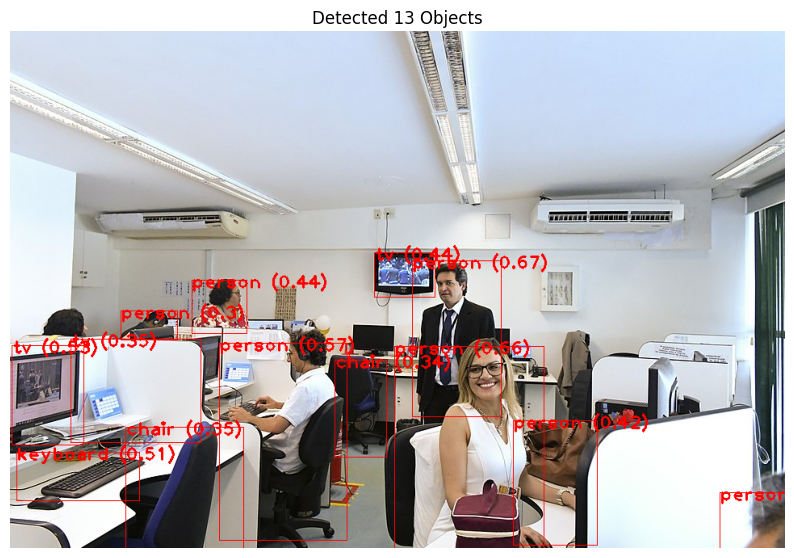

# Note: for this session we use a GPU on an older version of Colab
# %%time
!pip install mediapipe mediapipe-model-makerComputer Vision with MediaPipe
Learning Objectives
- Learn how to do simple object detection with MediaPipe
import numpy as np
import mediapipe as mp
from mediapipe.tasks import python
from mediapipe.tasks.python import vision
import cv2 # OpenCV for image manipulation (drawing boxes)
import matplotlib.pyplot as plt # Matplotlib for displaying the result# Download a model
# path = kagglehub.model_download("tensorflow/efficientdet/tfLite/lite0-detection-metadata")
# path = kagglehub.model_download("tensorflow/mobilenet-v2/tfLite/1-0-224-metadata")
!wget https://storage.googleapis.com/mediapipe-models/object_detector/ssd_mobilenet_v2/float16/latest/ssd_mobilenet_v2.tflite
!ls--2025-12-04 09:03:46-- https://storage.googleapis.com/mediapipe-models/object_detector/ssd_mobilenet_v2/float16/latest/ssd_mobilenet_v2.tflite
Resolving storage.googleapis.com (storage.googleapis.com)... 74.125.130.207, 74.125.68.207, 74.125.24.207, ...
Connecting to storage.googleapis.com (storage.googleapis.com)|74.125.130.207|:443... connected.
HTTP request sent, awaiting response... 200 OK
Length: 5918749 (5.6M) [application/octet-stream]
Saving to: ‘ssd_mobilenet_v2.tflite’
ssd_mobilenet_v2.tf 100%[===================>] 5.64M 3.77MB/s in 1.5s
2025-12-04 09:03:49 (3.77 MB/s) - ‘ssd_mobilenet_v2.tflite’ saved [5918749/5918749]
sample_data ssd_mobilenet_v2.tflite# Download some random example images
!wget -Oq demo.jpg https://upload.wikimedia.org/wikipedia/commons/thumb/0/02/Family_lunch_in_Uganda.jpg/960px-Family_lunch_in_Uganda.jpg
!wget -Oq demo2.jpg https://upload.wikimedia.org/wikipedia/commons/thumb/9/99/Posse_Senadores_2019_%2833076008488%29.jpg/960px-Posse_Senadores_2019_%2833076008488%29.jpg
# Download a real dataset of tumors in a brain (coco format) https://www.kaggle.com/datasets/pkdarabi/brain-tumor-image-dataset-semantic-segmentation/data
!curl -q -L -o brain-tumor-image-dataset-semantic-segmentation.zip\
https://www.kaggle.com/api/v1/datasets/download/pkdarabi/brain-tumor-image-dataset-semantic-segmentation
!unzip -q brain-tumor-image-dataset-semantic-segmentation.zip
!ls--2025-12-04 09:03:49-- https://upload.wikimedia.org/wikipedia/commons/thumb/0/02/Family_lunch_in_Uganda.jpg/960px-Family_lunch_in_Uganda.jpg
Resolving upload.wikimedia.org (upload.wikimedia.org)... 103.102.166.240, 2001:df2:e500:ed1a::2:b
Connecting to upload.wikimedia.org (upload.wikimedia.org)|103.102.166.240|:443... connected.
HTTP request sent, awaiting response... 200 OK
Length: 136934 (134K) [image/jpeg]
Saving to: ‘demo.jpg’
demo.jpg 100%[===================>] 133.72K --.-KB/s in 0.004s
2025-12-04 09:03:49 (33.4 MB/s) - ‘demo.jpg’ saved [136934/136934]
--2025-12-04 09:03:49-- https://upload.wikimedia.org/wikipedia/commons/thumb/9/99/Posse_Senadores_2019_%2833076008488%29.jpg/960px-Posse_Senadores_2019_%2833076008488%29.jpg
Resolving upload.wikimedia.org (upload.wikimedia.org)... 103.102.166.240, 2001:df2:e500:ed1a::2:b
Connecting to upload.wikimedia.org (upload.wikimedia.org)|103.102.166.240|:443... connected.
HTTP request sent, awaiting response... 200 OK
Length: 118056 (115K) [image/jpeg]
Saving to: ‘demo2.jpg’
demo2.jpg 100%[===================>] 115.29K 299KB/s in 0.4s
2025-12-04 09:03:50 (299 KB/s) - ‘demo2.jpg’ saved [118056/118056]
% Total % Received % Xferd Average Speed Time Time Time Current
Dload Upload Total Spent Left Speed
0 0 0 0 0 0 0 0 --:--:-- --:--:-- --:--:-- 0
100 83.6M 100 83.6M 0 0 14.6M 0 0:00:05 0:00:05 --:--:-- 19.8M
brain-tumor-image-dataset-semantic-segmentation.zip ssd_mobilenet_v2.tflite
demo2.jpg test
demo.jpg train
README.txt valid
sample_data# Model Path
DETECTION_MODEL_PATH = '/content/ssd_mobilenet_v2.tflite'
# Load an image
mp_image = mp.Image.create_from_file('demo2.jpg')
# mp_image = mp.Image.create_from_file("/content/train/images/1002_jpg.rf.57d3a8702704771f3315b19aac1aaae7.jpg")
# --- Object Detection ---
# 1. Set the Object Detection options
options = vision.ObjectDetectorOptions(
base_options=python.BaseOptions(model_asset_path=DETECTION_MODEL_PATH),
running_mode=vision.RunningMode.IMAGE,
max_results=20, # How many objects to show
score_threshold=0.3 # Only show objects with >30% confidence
)
# 2. Initialize the Model
detector = vision.ObjectDetector.create_from_options(options)
# 3. Run the Task
detection_result = detector.detect(mp_image)
# 4. Process and Report Results (Text)
detections = detection_result.detections
if detections:
for i, detection in enumerate(detections):
bbox = detection.bounding_box
category = detection.categories[0]
print(f" {i+1}. {category.category_name} ({category.score:.2f})")
print(f" BBox: x={bbox.origin_x}, y={bbox.origin_y}, w={bbox.width}, h={bbox.height}")
else:
print("No objects detected above the threshold.") 1. person (0.67)
BBox: x=498, y=284, w=110, h=193
2. person (0.66)
BBox: x=476, y=390, w=185, h=251
3. person (0.57)
BBox: x=259, y=386, w=158, h=244
4. tv (0.53)
BBox: x=2, y=389, w=89, h=123
5. keyboard (0.51)
BBox: x=8, y=521, w=152, h=60
6. tv (0.44)
BBox: x=451, y=274, w=75, h=55
7. person (0.44)
BBox: x=225, y=308, w=68, h=66
8. person (0.42)
BBox: x=623, y=482, w=104, h=154
9. tv (0.35)
BBox: x=75, y=381, w=161, h=128
10. chair (0.35)
BBox: x=143, y=490, w=146, h=150
11. chair (0.34)
BBox: x=402, y=407, w=64, h=120
12. person (0.32)
BBox: x=879, y=571, w=81, h=69
13. person (0.30)
BBox: x=137, y=346, w=70, h=36# Visualisation Helper
def visualise(image, detection_result):
"""
Draws bounding boxes and labels on the image for diagnostic purposes.
"""
# Convert the MediaPipe image to a NumPy array (RGB) so we can draw on it
annotated_image = np.copy(image.numpy_view())
# Loop through all detections
for detection in detection_result.detections:
# Get the bounding box coordinates
bbox = detection.bounding_box
start_point = (bbox.origin_x, bbox.origin_y)
end_point = (bbox.origin_x + bbox.width, bbox.origin_y + bbox.height)
# Get the category name and score
category = detection.categories[0]
category_name = category.category_name
probability = round(category.score, 2)
result_text = f"{category_name} ({probability})"
# Draw the rectangle (Red color, thickness 3)
cv2.rectangle(annotated_image, start_point, end_point, (255, 0, 0), 1)
# Draw the label text just inside the box
text_location = (bbox.origin_x, bbox.origin_y + 10)
cv2.putText(annotated_image, result_text, text_location,
cv2.FONT_HERSHEY_PLAIN, 1.5, (255, 0, 0), 2)
return annotated_image
# --- 5. Visualization (Graphical) ---
annotated_image = visualise(mp_image, detection_result)
plt.figure(figsize=(10, 10))
plt.imshow(annotated_image)
plt.axis('off') # Hide axes for cleaner look
plt.title(f"Detected {len(detections)} Objects")
plt.show()
But what about our data!?
Most CV models are trained on something like ImageNet or COCO. We must fine-tune the models on new classes of data so it knows what we want it to find.
# Wrangle the data into the right structure
!mkdir train/images
!mv train/*.jpg train/images
!mkdir valid/images
!mv valid/*.jpg valid/images
!jq '.categories |= map(.id += 1) | .annotations |= map(.category_id += 1)' train/_annotations.coco.json > train/labels.json
!jq '.categories |= map(.id += 1) | .annotations |= map(.category_id += 1)' valid/_annotations.coco.json > valid/labels.jsonfrom mediapipe_model_maker import object_detector
import os
from matplotlib import patches, text, patheffects
from collections import defaultdict
import math
import json/usr/local/lib/python3.11/dist-packages/tensorflow_addons/utils/tfa_eol_msg.py:23: UserWarning:
TensorFlow Addons (TFA) has ended development and introduction of new features.
TFA has entered a minimal maintenance and release mode until a planned end of life in May 2024.
Please modify downstream libraries to take dependencies from other repositories in our TensorFlow community (e.g. Keras, Keras-CV, and Keras-NLP).
For more information see: https://github.com/tensorflow/addons/issues/2807
warnings.warn(train_annotation_file = 'train/labels.json'
val_annotation_file = 'valid/labels.json'
# The '_dataset_path' should point to the folder containing your 'train' and 'validation' folders
train_dataset_path = 'train'
validation_dataset_path = 'valid'# LOAD TRAINING DATA (COCO)
# Note: 'images_dir' is the subfolder inside 'train_dataset_path'
# 'annotation_filename' is the specific json file inside 'train_dataset_path'
train_data = object_detector.Dataset.from_coco_folder(
train_dataset_path
)
# LOAD VALIDATION DATA (COCO)
validation_data = object_detector.Dataset.from_coco_folder(
validation_dataset_path
)
print("train_data size: ", train_data.size)
print("validation_data size: ", validation_data.size)train_data size: 1501
validation_data size: 429# 2. Configure the Model (Same as before)
spec = object_detector.SupportedModels.MOBILENET_V2
hparams = object_detector.HParams(
batch_size=64,
epochs=1, # For demo purposes
learning_rate=0.3
)
options = object_detector.ObjectDetectorOptions(
supported_model=spec,
hparams=hparams
)# 3. Create and Train
%%time
print("Starting training...")
model = object_detector.ObjectDetector.create(
train_data=train_data,
validation_data=validation_data,
options=options
)Starting training.../usr/local/lib/python3.11/dist-packages/keras/src/engine/functional.py:642: UserWarning: Input dict contained keys ['6'] which did not match any model input. They will be ignored by the model.
inputs = self._flatten_to_reference_inputs(inputs)
WARNING:tensorflow:`tf.keras.layers.experimental.SyncBatchNormalization` endpoint is deprecated and will be removed in a future release. Please use `tf.keras.layers.BatchNormalization` with parameter `synchronized` set to True.Downloading https://storage.googleapis.com/tf_model_garden/vision/qat/mobilenetv2_ssd_coco/mobilenetv2_ssd_i256_ckpt.tar.gz to /tmp/model_maker/object_detector/mobilenetv2_i256
Model: "retina_net_model"
_________________________________________________________________
Layer (type) Output Shape Param #
=================================================================
mobile_net (MobileNet) {'2': (None, 64, 64, 24 2257984
),
'3': (None, 32, 32, 32
),
'4': (None, 16, 16, 96
),
'5': (None, 8, 8, 320)
, '6': (None, 8, 8, 128
0)}
fpn (FPN) {'5': (None, 8, 8, 128) 149056
, '4': (None, 16, 16, 1
28),
'3': (None, 32, 32, 12
8),
'6': (None, 4, 4, 128)
, '7': (None, 2, 2, 128
)}
multilevel_detection_gener multiple 0 (unused)
ator (MultilevelDetectionG
enerator)
retina_net_head (RetinaNet ({'3': (None, 32, 32, 3 173384
Head) 6),
'4': (None, 16, 16, 36
),
'5': (None, 8, 8, 36),
'6': (None, 4, 4, 36),
'7': (None, 2, 2, 36)}
, {'3': (None, 32, 32,
36),
'4': (None, 16, 16, 36
),
'5': (None, 8, 8, 36),
'6': (None, 4, 4, 36),
'7': (None, 2, 2, 36)}
, {})
=================================================================
Total params: 2580424 (9.84 MB)
Trainable params: 2534792 (9.67 MB)
Non-trainable params: 45632 (178.25 KB)
_________________________________________________________________
Epoch 1/5/usr/local/lib/python3.11/dist-packages/keras/src/backend.py:452: UserWarning: `tf.keras.backend.set_learning_phase` is deprecated and will be removed after 2020-10-11. To update it, simply pass a True/False value to the `training` argument of the `__call__` method of your layer or model.
warnings.warn(
WARNING:tensorflow:Gradients do not exist for variables ['conv2dbn_block_1/batch_normalization/gamma:0', 'conv2dbn_block_1/batch_normalization/beta:0'] when minimizing the loss. If you're using `model.compile()`, did you forget to provide a `loss` argument?
WARNING:tensorflow:Gradients do not exist for variables ['conv2dbn_block_1/batch_normalization/gamma:0', 'conv2dbn_block_1/batch_normalization/beta:0'] when minimizing the loss. If you're using `model.compile()`, did you forget to provide a `loss` argument?
WARNING:tensorflow:Gradients do not exist for variables ['conv2dbn_block_1/batch_normalization/gamma:0', 'conv2dbn_block_1/batch_normalization/beta:0'] when minimizing the loss. If you're using `model.compile()`, did you forget to provide a `loss` argument?
WARNING:tensorflow:Gradients do not exist for variables ['conv2dbn_block_1/batch_normalization/gamma:0', 'conv2dbn_block_1/batch_normalization/beta:0'] when minimizing the loss. If you're using `model.compile()`, did you forget to provide a `loss` argument?23/23 [==============================] - 542s 22s/step - total_loss: 2.4932 - cls_loss: 2.0546 - box_loss: 0.0077 - model_loss: 2.4375 - val_total_loss: 5.5039 - val_cls_loss: 1.8335 - val_box_loss: 0.0723 - val_model_loss: 5.4476
Epoch 2/5
23/23 [==============================] - 506s 22s/step - total_loss: 0.7976 - cls_loss: 0.5118 - box_loss: 0.0046 - model_loss: 0.7410 - val_total_loss: 2.4356 - val_cls_loss: 1.1564 - val_box_loss: 0.0244 - val_model_loss: 2.3788
Epoch 3/5
23/23 [==============================] - 505s 22s/step - total_loss: 0.5739 - cls_loss: 0.3483 - box_loss: 0.0034 - model_loss: 0.5171 - val_total_loss: 1.0552 - val_cls_loss: 0.6259 - val_box_loss: 0.0074 - val_model_loss: 0.9983
Epoch 4/5
23/23 [==============================] - 492s 21s/step - total_loss: 0.4516 - cls_loss: 0.2724 - box_loss: 0.0024 - model_loss: 0.3947 - val_total_loss: 0.8178 - val_cls_loss: 0.5247 - val_box_loss: 0.0047 - val_model_loss: 0.7609
Epoch 5/5
23/23 [==============================] - 506s 22s/step - total_loss: 0.3907 - cls_loss: 0.2322 - box_loss: 0.0020 - model_loss: 0.3338 - val_total_loss: 0.7595 - val_cls_loss: 0.4692 - val_box_loss: 0.0047 - val_model_loss: 0.7025# 4. Evaluate
loss, coco_metrics = model.evaluate(validation_data, batch_size=4)
print(f"Validation Loss: {loss}")
print(f"COCO Metrics: {coco_metrics}")108/108 [==============================] - 23s 212ms/step - total_loss: 0.7561 - cls_loss: 0.4663 - box_loss: 0.0047 - model_loss: 0.6991/usr/local/lib/python3.11/dist-packages/keras/src/engine/functional.py:642: UserWarning: Input dict contained keys ['6'] which did not match any model input. They will be ignored by the model.
inputs = self._flatten_to_reference_inputs(inputs)creating index...
index created!
creating index...
index created!
Running per image evaluation...
Evaluate annotation type *bbox*
DONE (t=0.28s).
Accumulating evaluation results...
DONE (t=0.06s).
Average Precision (AP) @[ IoU=0.50:0.95 | area= all | maxDets=100 ] = 0.332
Average Precision (AP) @[ IoU=0.50 | area= all | maxDets=100 ] = 0.681
Average Precision (AP) @[ IoU=0.75 | area= all | maxDets=100 ] = 0.292
Average Precision (AP) @[ IoU=0.50:0.95 | area= small | maxDets=100 ] = -1.000
Average Precision (AP) @[ IoU=0.50:0.95 | area=medium | maxDets=100 ] = 0.288
Average Precision (AP) @[ IoU=0.50:0.95 | area= large | maxDets=100 ] = 0.370
Average Recall (AR) @[ IoU=0.50:0.95 | area= all | maxDets= 1 ] = 0.406
Average Recall (AR) @[ IoU=0.50:0.95 | area= all | maxDets= 10 ] = 0.474
Average Recall (AR) @[ IoU=0.50:0.95 | area= all | maxDets=100 ] = 0.476
Average Recall (AR) @[ IoU=0.50:0.95 | area= small | maxDets=100 ] = -1.000
Average Recall (AR) @[ IoU=0.50:0.95 | area=medium | maxDets=100 ] = 0.401
Average Recall (AR) @[ IoU=0.50:0.95 | area= large | maxDets=100 ] = 0.529
Validation Loss: [0.7561414241790771, 0.4663231372833252, 0.004656302276998758, 0.6991381049156189]
COCO Metrics: {'AP': 0.3322688, 'AP50': 0.6808129, 'AP75': 0.2921111, 'APs': -1.0, 'APm': 0.28819674, 'APl': 0.36999354, 'ARmax1': 0.40603065, 'ARmax10': 0.47395304, 'ARmax100': 0.47633398, 'ARs': -1.0, 'ARm': 0.40103784, 'ARl': 0.5289566}--------------------------------------------------------------------------- TypeError Traceback (most recent call last) /tmp/ipython-input-14-293431854.py in <cell line: 0>() 9 os.makedirs(output_dir) 10 ---> 11 model.export_model(model_name='my_coco_model.tflite', export_dir=output_dir) 12 print(f"Model exported to {output_dir}/my_coco_model.tflite") TypeError: ObjectDetector.export_model() got an unexpected keyword argument 'export_dir'
# 4. Export the model!
model.export_model(model_name="brain.tflite")Exporting a floating point model/usr/local/lib/python3.11/dist-packages/keras/src/engine/functional.py:642: UserWarning: Input dict contained keys ['6'] which did not match any model input. They will be ignored by the model.
inputs = self._flatten_to_reference_inputs(inputs)
/usr/local/lib/python3.11/dist-packages/keras/src/engine/functional.py:642: UserWarning: Input dict contained keys ['6'] which did not match any model input. They will be ignored by the model.
inputs = self._flatten_to_reference_inputs(inputs)
WARNING:tensorflow:Skipping full serialization of Keras layer <official.vision.modeling.retinanet_model.RetinaNetModel object at 0x7d26dacf4810>, because it is not built.
WARNING:tensorflow:Skipping full serialization of Keras layer <keras.src.layers.merging.add.Add object at 0x7d27562816d0>, because it is not built.
WARNING:tensorflow:Skipping full serialization of Keras layer <keras.src.layers.merging.add.Add object at 0x7d27562ed290>, because it is not built.
WARNING:tensorflow:Skipping full serialization of Keras layer <keras.src.layers.merging.add.Add object at 0x7d2744df5490>, because it is not built.
WARNING:tensorflow:Skipping full serialization of Keras layer <keras.src.layers.merging.add.Add object at 0x7d27404bbb10>, because it is not built.
WARNING:tensorflow:Skipping full serialization of Keras layer <keras.src.layers.merging.add.Add object at 0x7d274053a390>, because it is not built.
WARNING:tensorflow:Skipping full serialization of Keras layer <keras.src.layers.merging.add.Add object at 0x7d27562b4810>, because it is not built.
WARNING:tensorflow:Skipping full serialization of Keras layer <keras.src.layers.merging.add.Add object at 0x7d27403e94d0>, because it is not built.
WARNING:tensorflow:Skipping full serialization of Keras layer <official.vision.modeling.layers.detection_generator.MultilevelDetectionGenerator object at 0x7d26d080f310>, because it is not built.
WARNING:absl:Importing a function (__inference_internal_grad_fn_2420167) with ops with unsaved custom gradients. Will likely fail if a gradient is requested.
WARNING:absl:Importing a function (__inference_internal_grad_fn_2418430) with ops with unsaved custom gradients. Will likely fail if a gradient is requested.
WARNING:absl:Importing a function (__inference_internal_grad_fn_2421202) with ops with unsaved custom gradients. Will likely fail if a gradient is requested.
WARNING:absl:Importing a function (__inference_internal_grad_fn_2414731) with ops with unsaved custom gradients. Will likely fail if a gradient is requested.
WARNING:absl:Importing a function (__inference_internal_grad_fn_2415811) with ops with unsaved custom gradients. Will likely fail if a gradient is requested.
WARNING:absl:Importing a function (__inference_internal_grad_fn_2417971) with ops with unsaved custom gradients. Will likely fail if a gradient is requested.
WARNING:absl:Importing a function (__inference_internal_grad_fn_2414560) with ops with unsaved custom gradients. Will likely fail if a gradient is requested.
WARNING:absl:Importing a function (__inference_internal_grad_fn_2415055) with ops with unsaved custom gradients. Will likely fail if a gradient is requested.
WARNING:absl:Importing a function (__inference_internal_grad_fn_2419807) with ops with unsaved custom gradients. Will likely fail if a gradient is requested.
WARNING:absl:Importing a function (__inference_internal_grad_fn_2414614) with ops with unsaved custom gradients. Will likely fail if a gradient is requested.
WARNING:absl:Importing a function (__inference_internal_grad_fn_2418232) with ops with unsaved custom gradients. Will likely fail if a gradient is requested.
WARNING:absl:Importing a function (__inference_internal_grad_fn_2414488) with ops with unsaved custom gradients. Will likely fail if a gradient is requested.
WARNING:absl:Importing a function (__inference_internal_grad_fn_2413570) with ops with unsaved custom gradients. Will likely fail if a gradient is requested.
WARNING:absl:Importing a function (__inference_internal_grad_fn_2419429) with ops with unsaved custom gradients. Will likely fail if a gradient is requested.
WARNING:absl:Importing a function (__inference_internal_grad_fn_2420554) with ops with unsaved custom gradients. Will likely fail if a gradient is requested.
WARNING:absl:Importing a function (__inference_internal_grad_fn_2414452) with ops with unsaved custom gradients. Will likely fail if a gradient is requested.
WARNING:absl:Importing a function (__inference_internal_grad_fn_2414632) with ops with unsaved custom gradients. Will likely fail if a gradient is requested.
WARNING:absl:Importing a function (__inference_internal_grad_fn_2418034) with ops with unsaved custom gradients. Will likely fail if a gradient is requested.
WARNING:absl:Importing a function (__inference_internal_grad_fn_2419348) with ops with unsaved custom gradients. Will likely fail if a gradient is requested.
WARNING:absl:Importing a function (__inference_internal_grad_fn_2415280) with ops with unsaved custom gradients. Will likely fail if a gradient is requested.
WARNING:absl:Importing a function (__inference_internal_grad_fn_2416738) with ops with unsaved custom gradients. Will likely fail if a gradient is requested.
WARNING:absl:Importing a function (__inference_internal_grad_fn_2419483) with ops with unsaved custom gradients. Will likely fail if a gradient is requested.
WARNING:absl:Importing a function (__inference_internal_grad_fn_2420797) with ops with unsaved custom gradients. Will likely fail if a gradient is requested.
WARNING:absl:Importing a function (__inference_internal_grad_fn_2418835) with ops with unsaved custom gradients. Will likely fail if a gradient is requested.
WARNING:absl:Importing a function (__inference_internal_grad_fn_2420194) with ops with unsaved custom gradients. Will likely fail if a gradient is requested.
WARNING:absl:Importing a function (__inference_internal_grad_fn_2415766) with ops with unsaved custom gradients. Will likely fail if a gradient is requested.
WARNING:absl:Importing a function (__inference_internal_grad_fn_2419546) with ops with unsaved custom gradients. Will likely fail if a gradient is requested.
WARNING:absl:Importing a function (__inference_internal_grad_fn_2413561) with ops with unsaved custom gradients. Will likely fail if a gradient is requested.
WARNING:absl:Importing a function (__inference_internal_grad_fn_2415991) with ops with unsaved custom gradients. Will likely fail if a gradient is requested.
WARNING:absl:Importing a function (__inference_internal_grad_fn_2414083) with ops with unsaved custom gradients. Will likely fail if a gradient is requested.
WARNING:absl:Importing a function (__inference_internal_grad_fn_2418754) with ops with unsaved custom gradients. Will likely fail if a gradient is requested.
WARNING:absl:Importing a function (__inference_internal_grad_fn_2415190) with ops with unsaved custom gradients. Will likely fail if a gradient is requested.
WARNING:absl:Importing a function (__inference_internal_grad_fn_2420158) with ops with unsaved custom gradients. Will likely fail if a gradient is requested.
WARNING:absl:Importing a function (__inference_internal_grad_fn_2415163) with ops with unsaved custom gradients. Will likely fail if a gradient is requested.
WARNING:absl:Importing a function (__inference_internal_grad_fn_2418115) with ops with unsaved custom gradients. Will likely fail if a gradient is requested.
WARNING:absl:Importing a function (__inference_internal_grad_fn_2417656) with ops with unsaved custom gradients. Will likely fail if a gradient is requested.
WARNING:absl:Importing a function (__inference_internal_grad_fn_2415289) with ops with unsaved custom gradients. Will likely fail if a gradient is requested.
WARNING:absl:Importing a function (__inference_internal_grad_fn_2414353) with ops with unsaved custom gradients. Will likely fail if a gradient is requested.
WARNING:absl:Importing a function (__inference_internal_grad_fn_2415532) with ops with unsaved custom gradients. Will likely fail if a gradient is requested.
WARNING:absl:Importing a function (__inference_internal_grad_fn_2415559) with ops with unsaved custom gradients. Will likely fail if a gradient is requested.
WARNING:absl:Importing a function (__inference_internal_grad_fn_2417044) with ops with unsaved custom gradients. Will likely fail if a gradient is requested.
WARNING:absl:Importing a function (__inference_internal_grad_fn_2416342) with ops with unsaved custom gradients. Will likely fail if a gradient is requested.
WARNING:absl:Importing a function (__inference_internal_grad_fn_2414506) with ops with unsaved custom gradients. Will likely fail if a gradient is requested.
WARNING:absl:Importing a function (__inference_internal_grad_fn_2419717) with ops with unsaved custom gradients. Will likely fail if a gradient is requested.
WARNING:absl:Importing a function (__inference_internal_grad_fn_2413975) with ops with unsaved custom gradients. Will likely fail if a gradient is requested.
WARNING:absl:Importing a function (__inference_internal_grad_fn_2413615) with ops with unsaved custom gradients. Will likely fail if a gradient is requested.
WARNING:absl:Importing a function (__inference_internal_grad_fn_2420860) with ops with unsaved custom gradients. Will likely fail if a gradient is requested.
WARNING:absl:Importing a function (__inference_internal_grad_fn_2415964) with ops with unsaved custom gradients. Will likely fail if a gradient is requested.
WARNING:absl:Importing a function (__inference_internal_grad_fn_2416990) with ops with unsaved custom gradients. Will likely fail if a gradient is requested.
WARNING:absl:Importing a function (__inference_internal_grad_fn_2420950) with ops with unsaved custom gradients. Will likely fail if a gradient is requested.
WARNING:absl:Importing a function (__inference_internal_grad_fn_2417836) with ops with unsaved custom gradients. Will likely fail if a gradient is requested.
WARNING:absl:Importing a function (__inference_internal_grad_fn_2420671) with ops with unsaved custom gradients. Will likely fail if a gradient is requested.
WARNING:absl:Importing a function (__inference_internal_grad_fn_2421346) with ops with unsaved custom gradients. Will likely fail if a gradient is requested.
WARNING:absl:Importing a function (__inference_internal_grad_fn_2419897) with ops with unsaved custom gradients. Will likely fail if a gradient is requested.
WARNING:absl:Importing a function (__inference_internal_grad_fn_2419195) with ops with unsaved custom gradients. Will likely fail if a gradient is requested.
WARNING:absl:Importing a function (__inference_internal_grad_fn_2420995) with ops with unsaved custom gradients. Will likely fail if a gradient is requested.
WARNING:absl:Importing a function (__inference_internal_grad_fn_2417125) with ops with unsaved custom gradients. Will likely fail if a gradient is requested.
WARNING:absl:Importing a function (__inference_internal_grad_fn_2419366) with ops with unsaved custom gradients. Will likely fail if a gradient is requested.
WARNING:absl:Importing a function (__inference_internal_grad_fn_2414605) with ops with unsaved custom gradients. Will likely fail if a gradient is requested.
WARNING:absl:Importing a function (__inference_internal_grad_fn_2415100) with ops with unsaved custom gradients. Will likely fail if a gradient is requested.
WARNING:absl:Importing a function (__inference_internal_grad_fn_2420815) with ops with unsaved custom gradients. Will likely fail if a gradient is requested.
WARNING:absl:Importing a function (__inference_internal_grad_fn_2415145) with ops with unsaved custom gradients. Will likely fail if a gradient is requested.
WARNING:absl:Importing a function (__inference_internal_grad_fn_2415613) with ops with unsaved custom gradients. Will likely fail if a gradient is requested.
WARNING:absl:Importing a function (__inference_internal_grad_fn_2414299) with ops with unsaved custom gradients. Will likely fail if a gradient is requested.
WARNING:absl:Importing a function (__inference_internal_grad_fn_2414380) with ops with unsaved custom gradients. Will likely fail if a gradient is requested.
WARNING:absl:Importing a function (__inference_internal_grad_fn_2414038) with ops with unsaved custom gradients. Will likely fail if a gradient is requested.
WARNING:absl:Importing a function (__inference_internal_grad_fn_2416612) with ops with unsaved custom gradients. Will likely fail if a gradient is requested.
WARNING:absl:Importing a function (__inference_internal_grad_fn_2418385) with ops with unsaved custom gradients. Will likely fail if a gradient is requested.
WARNING:absl:Importing a function (__inference_internal_grad_fn_2415046) with ops with unsaved custom gradients. Will likely fail if a gradient is requested.
WARNING:absl:Importing a function (__inference_internal_grad_fn_2413759) with ops with unsaved custom gradients. Will likely fail if a gradient is requested.
WARNING:absl:Importing a function (__inference_internal_grad_fn_2420077) with ops with unsaved custom gradients. Will likely fail if a gradient is requested.
WARNING:absl:Importing a function (__inference_internal_grad_fn_2418106) with ops with unsaved custom gradients. Will likely fail if a gradient is requested.
WARNING:absl:Importing a function (__inference_internal_grad_fn_2417350) with ops with unsaved custom gradients. Will likely fail if a gradient is requested.
WARNING:absl:Importing a function (__inference_internal_grad_fn_2420680) with ops with unsaved custom gradients. Will likely fail if a gradient is requested.
WARNING:absl:Importing a function (__inference_internal_grad_fn_2418844) with ops with unsaved custom gradients. Will likely fail if a gradient is requested.
WARNING:absl:Importing a function (__inference_internal_grad_fn_2420617) with ops with unsaved custom gradients. Will likely fail if a gradient is requested.
WARNING:absl:Importing a function (__inference_internal_grad_fn_2420653) with ops with unsaved custom gradients. Will likely fail if a gradient is requested.
WARNING:absl:Importing a function (__inference_internal_grad_fn_2414641) with ops with unsaved custom gradients. Will likely fail if a gradient is requested.
WARNING:absl:Importing a function (__inference_internal_grad_fn_2418493) with ops with unsaved custom gradients. Will likely fail if a gradient is requested.
WARNING:absl:Importing a function (__inference_internal_grad_fn_2421013) with ops with unsaved custom gradients. Will likely fail if a gradient is requested.
WARNING:absl:Importing a function (__inference_internal_grad_fn_2413894) with ops with unsaved custom gradients. Will likely fail if a gradient is requested.
WARNING:absl:Importing a function (__inference_internal_grad_fn_2415370) with ops with unsaved custom gradients. Will likely fail if a gradient is requested.
WARNING:absl:Importing a function (__inference_internal_grad_fn_2416783) with ops with unsaved custom gradients. Will likely fail if a gradient is requested.
WARNING:absl:Importing a function (__inference_internal_grad_fn_2418826) with ops with unsaved custom gradients. Will likely fail if a gradient is requested.
WARNING:absl:Importing a function (__inference_internal_grad_fn_2415712) with ops with unsaved custom gradients. Will likely fail if a gradient is requested.
WARNING:absl:Importing a function (__inference_internal_grad_fn_2419006) with ops with unsaved custom gradients. Will likely fail if a gradient is requested.
WARNING:absl:Importing a function (__inference_internal_grad_fn_2419690) with ops with unsaved custom gradients. Will likely fail if a gradient is requested.
WARNING:absl:Importing a function (__inference_internal_grad_fn_2417089) with ops with unsaved custom gradients. Will likely fail if a gradient is requested.
WARNING:absl:Importing a function (__inference_internal_grad_fn_2417449) with ops with unsaved custom gradients. Will likely fail if a gradient is requested.
WARNING:absl:Importing a function (__inference_internal_grad_fn_2421544) with ops with unsaved custom gradients. Will likely fail if a gradient is requested.
WARNING:absl:Importing a function (__inference_internal_grad_fn_2419141) with ops with unsaved custom gradients. Will likely fail if a gradient is requested.
WARNING:absl:Importing a function (__inference_internal_grad_fn_2418718) with ops with unsaved custom gradients. Will likely fail if a gradient is requested.
WARNING:absl:Importing a function (__inference_internal_grad_fn_2418988) with ops with unsaved custom gradients. Will likely fail if a gradient is requested.
WARNING:absl:Importing a function (__inference_internal_grad_fn_2415172) with ops with unsaved custom gradients. Will likely fail if a gradient is requested.
WARNING:absl:Importing a function (__inference_internal_grad_fn_2413624) with ops with unsaved custom gradients. Will likely fail if a gradient is requested.
WARNING:absl:Importing a function (__inference_internal_grad_fn_2419339) with ops with unsaved custom gradients. Will likely fail if a gradient is requested.
WARNING:absl:Importing a function (__inference_internal_grad_fn_2414065) with ops with unsaved custom gradients. Will likely fail if a gradient is requested.
WARNING:absl:Importing a function (__inference_internal_grad_fn_2414047) with ops with unsaved custom gradients. Will likely fail if a gradient is requested.
WARNING:absl:Importing a function (__inference_internal_grad_fn_2420041) with ops with unsaved custom gradients. Will likely fail if a gradient is requested.
WARNING:absl:Importing a function (__inference_internal_grad_fn_2420788) with ops with unsaved custom gradients. Will likely fail if a gradient is requested.
WARNING:absl:Importing a function (__inference_internal_grad_fn_2420473) with ops with unsaved custom gradients. Will likely fail if a gradient is requested.
WARNING:absl:Importing a function (__inference_internal_grad_fn_2415586) with ops with unsaved custom gradients. Will likely fail if a gradient is requested.
WARNING:absl:Importing a function (__inference_internal_grad_fn_2414578) with ops with unsaved custom gradients. Will likely fail if a gradient is requested.
WARNING:absl:Importing a function (__inference_internal_grad_fn_2413516) with ops with unsaved custom gradients. Will likely fail if a gradient is requested.
WARNING:absl:Importing a function (__inference_internal_grad_fn_2415694) with ops with unsaved custom gradients. Will likely fail if a gradient is requested.
WARNING:absl:Importing a function (__inference_internal_grad_fn_2417251) with ops with unsaved custom gradients. Will likely fail if a gradient is requested.
WARNING:absl:Importing a function (__inference_internal_grad_fn_2419924) with ops with unsaved custom gradients. Will likely fail if a gradient is requested.
WARNING:absl:Importing a function (__inference_internal_grad_fn_2418853) with ops with unsaved custom gradients. Will likely fail if a gradient is requested.
WARNING:absl:Importing a function (__inference_internal_grad_fn_2414704) with ops with unsaved custom gradients. Will likely fail if a gradient is requested.
WARNING:absl:Importing a function (__inference_internal_grad_fn_2421256) with ops with unsaved custom gradients. Will likely fail if a gradient is requested.
WARNING:absl:Importing a function (__inference_internal_grad_fn_2419654) with ops with unsaved custom gradients. Will likely fail if a gradient is requested.
WARNING:absl:Importing a function (__inference_internal_grad_fn_2416288) with ops with unsaved custom gradients. Will likely fail if a gradient is requested.
WARNING:absl:Importing a function (__inference_internal_grad_fn_2416495) with ops with unsaved custom gradients. Will likely fail if a gradient is requested.
WARNING:absl:Importing a function (__inference_internal_grad_fn_2419375) with ops with unsaved custom gradients. Will likely fail if a gradient is requested.
WARNING:absl:Importing a function (__inference_internal_grad_fn_2417458) with ops with unsaved custom gradients. Will likely fail if a gradient is requested.
WARNING:absl:Importing a function (__inference_internal_grad_fn_2419555) with ops with unsaved custom gradients. Will likely fail if a gradient is requested.
WARNING:absl:Importing a function (__inference_internal_grad_fn_2415703) with ops with unsaved custom gradients. Will likely fail if a gradient is requested.
WARNING:absl:Importing a function (__inference_internal_grad_fn_2420383) with ops with unsaved custom gradients. Will likely fail if a gradient is requested.
WARNING:absl:Importing a function (__inference_internal_grad_fn_2419114) with ops with unsaved custom gradients. Will likely fail if a gradient is requested.
WARNING:absl:Importing a function (__inference_internal_grad_fn_2416936) with ops with unsaved custom gradients. Will likely fail if a gradient is requested.
WARNING:absl:Importing a function (__inference_internal_grad_fn_2416423) with ops with unsaved custom gradients. Will likely fail if a gradient is requested.
WARNING:absl:Importing a function (__inference_internal_grad_fn_2417710) with ops with unsaved custom gradients. Will likely fail if a gradient is requested.
WARNING:absl:Importing a function (__inference_internal_grad_fn_2414992) with ops with unsaved custom gradients. Will likely fail if a gradient is requested.
WARNING:absl:Importing a function (__inference_internal_grad_fn_2417485) with ops with unsaved custom gradients. Will likely fail if a gradient is requested.
WARNING:absl:Importing a function (__inference_internal_grad_fn_2420419) with ops with unsaved custom gradients. Will likely fail if a gradient is requested.
WARNING:absl:Importing a function (__inference_internal_grad_fn_2420230) with ops with unsaved custom gradients. Will likely fail if a gradient is requested.
WARNING:absl:Importing a function (__inference_internal_grad_fn_2418079) with ops with unsaved custom gradients. Will likely fail if a gradient is requested.
WARNING:absl:Importing a function (__inference_internal_grad_fn_2418277) with ops with unsaved custom gradients. Will likely fail if a gradient is requested.
WARNING:absl:Importing a function (__inference_internal_grad_fn_2418934) with ops with unsaved custom gradients. Will likely fail if a gradient is requested.
WARNING:absl:Importing a function (__inference_internal_grad_fn_2417494) with ops with unsaved custom gradients. Will likely fail if a gradient is requested.
WARNING:absl:Importing a function (__inference_internal_grad_fn_2416270) with ops with unsaved custom gradients. Will likely fail if a gradient is requested.
WARNING:absl:Importing a function (__inference_internal_grad_fn_2415397) with ops with unsaved custom gradients. Will likely fail if a gradient is requested.
WARNING:absl:Importing a function (__inference_internal_grad_fn_2420086) with ops with unsaved custom gradients. Will likely fail if a gradient is requested.
WARNING:absl:Importing a function (__inference_internal_grad_fn_2420923) with ops with unsaved custom gradients. Will likely fail if a gradient is requested.
WARNING:absl:Importing a function (__inference_internal_grad_fn_2419285) with ops with unsaved custom gradients. Will likely fail if a gradient is requested.
WARNING:absl:Importing a function (__inference_internal_grad_fn_2418871) with ops with unsaved custom gradients. Will likely fail if a gradient is requested.
WARNING:absl:Importing a function (__inference_internal_grad_fn_2419969) with ops with unsaved custom gradients. Will likely fail if a gradient is requested.
WARNING:absl:Importing a function (__inference_internal_grad_fn_2416234) with ops with unsaved custom gradients. Will likely fail if a gradient is requested.
WARNING:absl:Importing a function (__inference_internal_grad_fn_2414623) with ops with unsaved custom gradients. Will likely fail if a gradient is requested.
WARNING:absl:Importing a function (__inference_internal_grad_fn_2416522) with ops with unsaved custom gradients. Will likely fail if a gradient is requested.
WARNING:absl:Importing a function (__inference_internal_grad_fn_2414956) with ops with unsaved custom gradients. Will likely fail if a gradient is requested.
WARNING:absl:Importing a function (__inference_internal_grad_fn_2414308) with ops with unsaved custom gradients. Will likely fail if a gradient is requested.
WARNING:absl:Importing a function (__inference_internal_grad_fn_2414497) with ops with unsaved custom gradients. Will likely fail if a gradient is requested.
WARNING:absl:Importing a function (__inference_internal_grad_fn_2417683) with ops with unsaved custom gradients. Will likely fail if a gradient is requested.
WARNING:absl:Importing a function (__inference_internal_grad_fn_2419222) with ops with unsaved custom gradients. Will likely fail if a gradient is requested.
WARNING:absl:Importing a function (__inference_internal_grad_fn_2419357) with ops with unsaved custom gradients. Will likely fail if a gradient is requested.
WARNING:absl:Importing a function (__inference_internal_grad_fn_2414461) with ops with unsaved custom gradients. Will likely fail if a gradient is requested.
WARNING:absl:Importing a function (__inference_internal_grad_fn_2416396) with ops with unsaved custom gradients. Will likely fail if a gradient is requested.
WARNING:absl:Importing a function (__inference_internal_grad_fn_2419852) with ops with unsaved custom gradients. Will likely fail if a gradient is requested.
WARNING:absl:Importing a function (__inference_internal_grad_fn_2415109) with ops with unsaved custom gradients. Will likely fail if a gradient is requested.
WARNING:absl:Importing a function (__inference_internal_grad_fn_2414893) with ops with unsaved custom gradients. Will likely fail if a gradient is requested.
WARNING:absl:Importing a function (__inference_internal_grad_fn_2421022) with ops with unsaved custom gradients. Will likely fail if a gradient is requested.
WARNING:absl:Importing a function (__inference_internal_grad_fn_2415973) with ops with unsaved custom gradients. Will likely fail if a gradient is requested.
WARNING:absl:Importing a function (__inference_internal_grad_fn_2416558) with ops with unsaved custom gradients. Will likely fail if a gradient is requested.
WARNING:absl:Importing a function (__inference_internal_grad_fn_2418727) with ops with unsaved custom gradients. Will likely fail if a gradient is requested.
WARNING:absl:Importing a function (__inference_internal_grad_fn_2419888) with ops with unsaved custom gradients. Will likely fail if a gradient is requested.
WARNING:absl:Importing a function (__inference_internal_grad_fn_2416540) with ops with unsaved custom gradients. Will likely fail if a gradient is requested.
WARNING:absl:Importing a function (__inference_internal_grad_fn_2420410) with ops with unsaved custom gradients. Will likely fail if a gradient is requested.
WARNING:absl:Importing a function (__inference_internal_grad_fn_2416225) with ops with unsaved custom gradients. Will likely fail if a gradient is requested.
WARNING:absl:Importing a function (__inference_internal_grad_fn_2418196) with ops with unsaved custom gradients. Will likely fail if a gradient is requested.
WARNING:absl:Importing a function (__inference_internal_grad_fn_2416918) with ops with unsaved custom gradients. Will likely fail if a gradient is requested.
WARNING:absl:Importing a function (__inference_internal_grad_fn_2416072) with ops with unsaved custom gradients. Will likely fail if a gradient is requested.
WARNING:absl:Importing a function (__inference_internal_grad_fn_2413930) with ops with unsaved custom gradients. Will likely fail if a gradient is requested.
WARNING:absl:Importing a function (__inference_internal_grad_fn_2414884) with ops with unsaved custom gradients. Will likely fail if a gradient is requested.
WARNING:absl:Importing a function (__inference_internal_grad_fn_2416999) with ops with unsaved custom gradients. Will likely fail if a gradient is requested.
WARNING:absl:Importing a function (__inference_internal_grad_fn_2415604) with ops with unsaved custom gradients. Will likely fail if a gradient is requested.
WARNING:absl:Importing a function (__inference_internal_grad_fn_2419978) with ops with unsaved custom gradients. Will likely fail if a gradient is requested.
WARNING:absl:Importing a function (__inference_internal_grad_fn_2416486) with ops with unsaved custom gradients. Will likely fail if a gradient is requested.
WARNING:absl:Importing a function (__inference_internal_grad_fn_2420212) with ops with unsaved custom gradients. Will likely fail if a gradient is requested.
WARNING:absl:Importing a function (__inference_internal_grad_fn_2419501) with ops with unsaved custom gradients. Will likely fail if a gradient is requested.
WARNING:absl:Importing a function (__inference_internal_grad_fn_2419294) with ops with unsaved custom gradients. Will likely fail if a gradient is requested.
WARNING:absl:Importing a function (__inference_internal_grad_fn_2418907) with ops with unsaved custom gradients. Will likely fail if a gradient is requested.
WARNING:absl:Importing a function (__inference_internal_grad_fn_2419906) with ops with unsaved custom gradients. Will likely fail if a gradient is requested.
WARNING:absl:Importing a function (__inference_internal_grad_fn_2419573) with ops with unsaved custom gradients. Will likely fail if a gradient is requested.
WARNING:absl:Importing a function (__inference_internal_grad_fn_2415244) with ops with unsaved custom gradients. Will likely fail if a gradient is requested.
WARNING:absl:Importing a function (__inference_internal_grad_fn_2419276) with ops with unsaved custom gradients. Will likely fail if a gradient is requested.
WARNING:absl:Importing a function (__inference_internal_grad_fn_2414326) with ops with unsaved custom gradients. Will likely fail if a gradient is requested.
WARNING:absl:Importing a function (__inference_internal_grad_fn_2416963) with ops with unsaved custom gradients. Will likely fail if a gradient is requested.
WARNING:absl:Importing a function (__inference_internal_grad_fn_2415010) with ops with unsaved custom gradients. Will likely fail if a gradient is requested.
WARNING:absl:Importing a function (__inference_internal_grad_fn_2418628) with ops with unsaved custom gradients. Will likely fail if a gradient is requested.
WARNING:absl:Importing a function (__inference_internal_grad_fn_2415667) with ops with unsaved custom gradients. Will likely fail if a gradient is requested.
WARNING:absl:Importing a function (__inference_internal_grad_fn_2413903) with ops with unsaved custom gradients. Will likely fail if a gradient is requested.
WARNING:absl:Importing a function (__inference_internal_grad_fn_2419177) with ops with unsaved custom gradients. Will likely fail if a gradient is requested.
WARNING:absl:Importing a function (__inference_internal_grad_fn_2413795) with ops with unsaved custom gradients. Will likely fail if a gradient is requested.
WARNING:absl:Importing a function (__inference_internal_grad_fn_2416036) with ops with unsaved custom gradients. Will likely fail if a gradient is requested.
WARNING:absl:Importing a function (__inference_internal_grad_fn_2416945) with ops with unsaved custom gradients. Will likely fail if a gradient is requested.
WARNING:absl:Importing a function (__inference_internal_grad_fn_2414281) with ops with unsaved custom gradients. Will likely fail if a gradient is requested.
WARNING:absl:Importing a function (__inference_internal_grad_fn_2414659) with ops with unsaved custom gradients. Will likely fail if a gradient is requested.
WARNING:absl:Importing a function (__inference_internal_grad_fn_2416657) with ops with unsaved custom gradients. Will likely fail if a gradient is requested.
WARNING:absl:Importing a function (__inference_internal_grad_fn_2416927) with ops with unsaved custom gradients. Will likely fail if a gradient is requested.
WARNING:absl:Importing a function (__inference_internal_grad_fn_2414929) with ops with unsaved custom gradients. Will likely fail if a gradient is requested.
WARNING:absl:Importing a function (__inference_internal_grad_fn_2417737) with ops with unsaved custom gradients. Will likely fail if a gradient is requested.
WARNING:absl:Importing a function (__inference_internal_grad_fn_2416441) with ops with unsaved custom gradients. Will likely fail if a gradient is requested.
WARNING:absl:Importing a function (__inference_internal_grad_fn_2415730) with ops with unsaved custom gradients. Will likely fail if a gradient is requested.
WARNING:absl:Importing a function (__inference_internal_grad_fn_2420572) with ops with unsaved custom gradients. Will likely fail if a gradient is requested.
WARNING:absl:Importing a function (__inference_internal_grad_fn_2414092) with ops with unsaved custom gradients. Will likely fail if a gradient is requested.
WARNING:absl:Importing a function (__inference_internal_grad_fn_2418403) with ops with unsaved custom gradients. Will likely fail if a gradient is requested.
WARNING:absl:Importing a function (__inference_internal_grad_fn_2419105) with ops with unsaved custom gradients. Will likely fail if a gradient is requested.
WARNING:absl:Importing a function (__inference_internal_grad_fn_2418502) with ops with unsaved custom gradients. Will likely fail if a gradient is requested.
WARNING:absl:Importing a function (__inference_internal_grad_fn_2418862) with ops with unsaved custom gradients. Will likely fail if a gradient is requested.
WARNING:absl:Importing a function (__inference_internal_grad_fn_2420311) with ops with unsaved custom gradients. Will likely fail if a gradient is requested.
WARNING:absl:Importing a function (__inference_internal_grad_fn_2415424) with ops with unsaved custom gradients. Will likely fail if a gradient is requested.
WARNING:absl:Importing a function (__inference_internal_grad_fn_2418295) with ops with unsaved custom gradients. Will likely fail if a gradient is requested.
WARNING:absl:Importing a function (__inference_internal_grad_fn_2416828) with ops with unsaved custom gradients. Will likely fail if a gradient is requested.
WARNING:absl:Importing a function (__inference_internal_grad_fn_2415919) with ops with unsaved custom gradients. Will likely fail if a gradient is requested.
WARNING:absl:Importing a function (__inference_internal_grad_fn_2416729) with ops with unsaved custom gradients. Will likely fail if a gradient is requested.
WARNING:absl:Importing a function (__inference_internal_grad_fn_2419303) with ops with unsaved custom gradients. Will likely fail if a gradient is requested.
WARNING:absl:Importing a function (__inference_internal_grad_fn_2414947) with ops with unsaved custom gradients. Will likely fail if a gradient is requested.
WARNING:absl:Importing a function (__inference_internal_grad_fn_2419672) with ops with unsaved custom gradients. Will likely fail if a gradient is requested.
WARNING:absl:Importing a function (__inference_internal_grad_fn_2419996) with ops with unsaved custom gradients. Will likely fail if a gradient is requested.
WARNING:absl:Importing a function (__inference_internal_grad_fn_2417035) with ops with unsaved custom gradients. Will likely fail if a gradient is requested.
WARNING:absl:Importing a function (__inference_internal_grad_fn_2415874) with ops with unsaved custom gradients. Will likely fail if a gradient is requested.
WARNING:absl:Importing a function (__inference_internal_grad_fn_2419465) with ops with unsaved custom gradients. Will likely fail if a gradient is requested.
WARNING:absl:Importing a function (__inference_internal_grad_fn_2419087) with ops with unsaved custom gradients. Will likely fail if a gradient is requested.
WARNING:absl:Importing a function (__inference_internal_grad_fn_2418916) with ops with unsaved custom gradients. Will likely fail if a gradient is requested.
WARNING:absl:Importing a function (__inference_internal_grad_fn_2419987) with ops with unsaved custom gradients. Will likely fail if a gradient is requested.
WARNING:absl:Importing a function (__inference_internal_grad_fn_2415001) with ops with unsaved custom gradients. Will likely fail if a gradient is requested.
WARNING:absl:Importing a function (__inference_internal_grad_fn_2417890) with ops with unsaved custom gradients. Will likely fail if a gradient is requested.
WARNING:absl:Importing a function (__inference_internal_grad_fn_2418439) with ops with unsaved custom gradients. Will likely fail if a gradient is requested.
WARNING:absl:Importing a function (__inference_internal_grad_fn_2416144) with ops with unsaved custom gradients. Will likely fail if a gradient is requested.
WARNING:absl:Importing a function (__inference_internal_grad_fn_2417422) with ops with unsaved custom gradients. Will likely fail if a gradient is requested.
WARNING:absl:Importing a function (__inference_internal_grad_fn_2418511) with ops with unsaved custom gradients. Will likely fail if a gradient is requested.
WARNING:absl:Importing a function (__inference_internal_grad_fn_2419564) with ops with unsaved custom gradients. Will likely fail if a gradient is requested.
WARNING:absl:Importing a function (__inference_internal_grad_fn_2421031) with ops with unsaved custom gradients. Will likely fail if a gradient is requested.
WARNING:absl:Importing a function (__inference_internal_grad_fn_2418484) with ops with unsaved custom gradients. Will likely fail if a gradient is requested.
WARNING:absl:Importing a function (__inference_internal_grad_fn_2420509) with ops with unsaved custom gradients. Will likely fail if a gradient is requested.
WARNING:absl:Importing a function (__inference_internal_grad_fn_2417026) with ops with unsaved custom gradients. Will likely fail if a gradient is requested.
WARNING:absl:Importing a function (__inference_internal_grad_fn_2421175) with ops with unsaved custom gradients. Will likely fail if a gradient is requested.
WARNING:absl:Importing a function (__inference_internal_grad_fn_2417143) with ops with unsaved custom gradients. Will likely fail if a gradient is requested.
WARNING:absl:Importing a function (__inference_internal_grad_fn_2421184) with ops with unsaved custom gradients. Will likely fail if a gradient is requested.
WARNING:absl:Importing a function (__inference_internal_grad_fn_2418682) with ops with unsaved custom gradients. Will likely fail if a gradient is requested.
WARNING:absl:Importing a function (__inference_internal_grad_fn_2419960) with ops with unsaved custom gradients. Will likely fail if a gradient is requested.
WARNING:absl:Importing a function (__inference_internal_grad_fn_2418601) with ops with unsaved custom gradients. Will likely fail if a gradient is requested.
WARNING:absl:Importing a function (__inference_internal_grad_fn_2421373) with ops with unsaved custom gradients. Will likely fail if a gradient is requested.
WARNING:absl:Importing a function (__inference_internal_grad_fn_2419213) with ops with unsaved custom gradients. Will likely fail if a gradient is requested.
WARNING:absl:Importing a function (__inference_internal_grad_fn_2417296) with ops with unsaved custom gradients. Will likely fail if a gradient is requested.
WARNING:absl:Importing a function (__inference_internal_grad_fn_2413678) with ops with unsaved custom gradients. Will likely fail if a gradient is requested.
WARNING:absl:Importing a function (__inference_internal_grad_fn_2413957) with ops with unsaved custom gradients. Will likely fail if a gradient is requested.
WARNING:absl:Importing a function (__inference_internal_grad_fn_2413534) with ops with unsaved custom gradients. Will likely fail if a gradient is requested.
WARNING:absl:Importing a function (__inference_internal_grad_fn_2419447) with ops with unsaved custom gradients. Will likely fail if a gradient is requested.
WARNING:absl:Importing a function (__inference_internal_grad_fn_2419933) with ops with unsaved custom gradients. Will likely fail if a gradient is requested.
WARNING:absl:Importing a function (__inference_internal_grad_fn_2420392) with ops with unsaved custom gradients. Will likely fail if a gradient is requested.
WARNING:absl:Importing a function (__inference_internal_grad_fn_2419834) with ops with unsaved custom gradients. Will likely fail if a gradient is requested.
WARNING:absl:Importing a function (__inference_internal_grad_fn_2413921) with ops with unsaved custom gradients. Will likely fail if a gradient is requested.
WARNING:absl:Importing a function (__inference_internal_grad_fn_2415235) with ops with unsaved custom gradients. Will likely fail if a gradient is requested.
WARNING:absl:Importing a function (__inference_internal_grad_fn_2421085) with ops with unsaved custom gradients. Will likely fail if a gradient is requested.
WARNING:absl:Importing a function (__inference_internal_grad_fn_2418259) with ops with unsaved custom gradients. Will likely fail if a gradient is requested.
WARNING:absl:Importing a function (__inference_internal_grad_fn_2415388) with ops with unsaved custom gradients. Will likely fail if a gradient is requested.
WARNING:absl:Importing a function (__inference_internal_grad_fn_2417287) with ops with unsaved custom gradients. Will likely fail if a gradient is requested.
WARNING:absl:Importing a function (__inference_internal_grad_fn_2420689) with ops with unsaved custom gradients. Will likely fail if a gradient is requested.
WARNING:absl:Importing a function (__inference_internal_grad_fn_2413597) with ops with unsaved custom gradients. Will likely fail if a gradient is requested.
WARNING:absl:Importing a function (__inference_internal_grad_fn_2420635) with ops with unsaved custom gradients. Will likely fail if a gradient is requested.
WARNING:absl:Importing a function (__inference_internal_grad_fn_2417962) with ops with unsaved custom gradients. Will likely fail if a gradient is requested.
WARNING:absl:Importing a function (__inference_internal_grad_fn_2416792) with ops with unsaved custom gradients. Will likely fail if a gradient is requested.
WARNING:absl:Importing a function (__inference_internal_grad_fn_2420752) with ops with unsaved custom gradients. Will likely fail if a gradient is requested.
WARNING:absl:Importing a function (__inference_internal_grad_fn_2415892) with ops with unsaved custom gradients. Will likely fail if a gradient is requested.
WARNING:absl:Importing a function (__inference_internal_grad_fn_2420374) with ops with unsaved custom gradients. Will likely fail if a gradient is requested.
WARNING:absl:Importing a function (__inference_internal_grad_fn_2417008) with ops with unsaved custom gradients. Will likely fail if a gradient is requested.
WARNING:absl:Importing a function (__inference_internal_grad_fn_2415946) with ops with unsaved custom gradients. Will likely fail if a gradient is requested.
WARNING:absl:Importing a function (__inference_internal_grad_fn_2417530) with ops with unsaved custom gradients. Will likely fail if a gradient is requested.
WARNING:absl:Importing a function (__inference_internal_grad_fn_2414848) with ops with unsaved custom gradients. Will likely fail if a gradient is requested.
WARNING:absl:Importing a function (__inference_internal_grad_fn_2419204) with ops with unsaved custom gradients. Will likely fail if a gradient is requested.
WARNING:absl:Importing a function (__inference_internal_grad_fn_2413849) with ops with unsaved custom gradients. Will likely fail if a gradient is requested.
WARNING:absl:Importing a function (__inference_internal_grad_fn_2418763) with ops with unsaved custom gradients. Will likely fail if a gradient is requested.
WARNING:absl:Importing a function (__inference_internal_grad_fn_2414389) with ops with unsaved custom gradients. Will likely fail if a gradient is requested.
WARNING:absl:Importing a function (__inference_internal_grad_fn_2420869) with ops with unsaved custom gradients. Will likely fail if a gradient is requested.
WARNING:absl:Importing a function (__inference_internal_grad_fn_2416153) with ops with unsaved custom gradients. Will likely fail if a gradient is requested.
WARNING:absl:Importing a function (__inference_internal_grad_fn_2414542) with ops with unsaved custom gradients. Will likely fail if a gradient is requested.
WARNING:absl:Importing a function (__inference_internal_grad_fn_2420536) with ops with unsaved custom gradients. Will likely fail if a gradient is requested.
WARNING:absl:Importing a function (__inference_internal_grad_fn_2414344) with ops with unsaved custom gradients. Will likely fail if a gradient is requested.
WARNING:absl:Importing a function (__inference_internal_grad_fn_2420968) with ops with unsaved custom gradients. Will likely fail if a gradient is requested.
WARNING:absl:Importing a function (__inference_internal_grad_fn_2413660) with ops with unsaved custom gradients. Will likely fail if a gradient is requested.
WARNING:absl:Importing a function (__inference_internal_grad_fn_2417908) with ops with unsaved custom gradients. Will likely fail if a gradient is requested.
WARNING:absl:Importing a function (__inference_internal_grad_fn_2417467) with ops with unsaved custom gradients. Will likely fail if a gradient is requested.
WARNING:absl:Importing a function (__inference_internal_grad_fn_2415856) with ops with unsaved custom gradients. Will likely fail if a gradient is requested.
WARNING:absl:Importing a function (__inference_internal_grad_fn_2420707) with ops with unsaved custom gradients. Will likely fail if a gradient is requested.
WARNING:absl:Importing a function (__inference_internal_grad_fn_2415433) with ops with unsaved custom gradients. Will likely fail if a gradient is requested.
WARNING:absl:Importing a function (__inference_internal_grad_fn_2419843) with ops with unsaved custom gradients. Will likely fail if a gradient is requested.
WARNING:absl:Importing a function (__inference_internal_grad_fn_2413813) with ops with unsaved custom gradients. Will likely fail if a gradient is requested.
WARNING:absl:Importing a function (__inference_internal_grad_fn_2416567) with ops with unsaved custom gradients. Will likely fail if a gradient is requested.
WARNING:absl:Importing a function (__inference_internal_grad_fn_2413831) with ops with unsaved custom gradients. Will likely fail if a gradient is requested.
WARNING:absl:Importing a function (__inference_internal_grad_fn_2417854) with ops with unsaved custom gradients. Will likely fail if a gradient is requested.
WARNING:absl:Importing a function (__inference_internal_grad_fn_2414524) with ops with unsaved custom gradients. Will likely fail if a gradient is requested.
WARNING:absl:Importing a function (__inference_internal_grad_fn_2415082) with ops with unsaved custom gradients. Will likely fail if a gradient is requested.
WARNING:absl:Importing a function (__inference_internal_grad_fn_2417323) with ops with unsaved custom gradients. Will likely fail if a gradient is requested.
WARNING:absl:Importing a function (__inference_internal_grad_fn_2420239) with ops with unsaved custom gradients. Will likely fail if a gradient is requested.
WARNING:absl:Importing a function (__inference_internal_grad_fn_2417989) with ops with unsaved custom gradients. Will likely fail if a gradient is requested.
WARNING:absl:Importing a function (__inference_internal_grad_fn_2414254) with ops with unsaved custom gradients. Will likely fail if a gradient is requested.
WARNING:absl:Importing a function (__inference_internal_grad_fn_2414029) with ops with unsaved custom gradients. Will likely fail if a gradient is requested.
WARNING:absl:Importing a function (__inference_internal_grad_fn_2418169) with ops with unsaved custom gradients. Will likely fail if a gradient is requested.
WARNING:absl:Importing a function (__inference_internal_grad_fn_2416414) with ops with unsaved custom gradients. Will likely fail if a gradient is requested.
WARNING:absl:Importing a function (__inference_internal_grad_fn_2417692) with ops with unsaved custom gradients. Will likely fail if a gradient is requested.
WARNING:absl:Importing a function (__inference_internal_grad_fn_2421481) with ops with unsaved custom gradients. Will likely fail if a gradient is requested.
WARNING:absl:Importing a function (__inference_internal_grad_fn_2417188) with ops with unsaved custom gradients. Will likely fail if a gradient is requested.
WARNING:absl:Importing a function (__inference_internal_grad_fn_2414110) with ops with unsaved custom gradients. Will likely fail if a gradient is requested.
WARNING:absl:Importing a function (__inference_internal_grad_fn_2414938) with ops with unsaved custom gradients. Will likely fail if a gradient is requested.
WARNING:absl:Importing a function (__inference_internal_grad_fn_2421364) with ops with unsaved custom gradients. Will likely fail if a gradient is requested.
WARNING:absl:Importing a function (__inference_internal_grad_fn_2416747) with ops with unsaved custom gradients. Will likely fail if a gradient is requested.
WARNING:absl:Importing a function (__inference_internal_grad_fn_2416504) with ops with unsaved custom gradients. Will likely fail if a gradient is requested.
WARNING:absl:Importing a function (__inference_internal_grad_fn_2420581) with ops with unsaved custom gradients. Will likely fail if a gradient is requested.
WARNING:absl:Importing a function (__inference_internal_grad_fn_2420806) with ops with unsaved custom gradients. Will likely fail if a gradient is requested.
WARNING:absl:Importing a function (__inference_internal_grad_fn_2419528) with ops with unsaved custom gradients. Will likely fail if a gradient is requested.
WARNING:absl:Importing a function (__inference_internal_grad_fn_2414317) with ops with unsaved custom gradients. Will likely fail if a gradient is requested.
WARNING:absl:Importing a function (__inference_internal_grad_fn_2416846) with ops with unsaved custom gradients. Will likely fail if a gradient is requested.
WARNING:absl:Importing a function (__inference_internal_grad_fn_2421166) with ops with unsaved custom gradients. Will likely fail if a gradient is requested.
WARNING:absl:Importing a function (__inference_internal_grad_fn_2413606) with ops with unsaved custom gradients. Will likely fail if a gradient is requested.
WARNING:absl:Importing a function (__inference_internal_grad_fn_2421310) with ops with unsaved custom gradients. Will likely fail if a gradient is requested.
WARNING:absl:Importing a function (__inference_internal_grad_fn_2420590) with ops with unsaved custom gradients. Will likely fail if a gradient is requested.
WARNING:absl:Importing a function (__inference_internal_grad_fn_2416306) with ops with unsaved custom gradients. Will likely fail if a gradient is requested.
WARNING:absl:Importing a function (__inference_internal_grad_fn_2418538) with ops with unsaved custom gradients. Will likely fail if a gradient is requested.
WARNING:absl:Importing a function (__inference_internal_grad_fn_2419159) with ops with unsaved custom gradients. Will likely fail if a gradient is requested.
WARNING:absl:Importing a function (__inference_internal_grad_fn_2413966) with ops with unsaved custom gradients. Will likely fail if a gradient is requested.
WARNING:absl:Importing a function (__inference_internal_grad_fn_2415154) with ops with unsaved custom gradients. Will likely fail if a gradient is requested.
WARNING:absl:Importing a function (__inference_internal_grad_fn_2414713) with ops with unsaved custom gradients. Will likely fail if a gradient is requested.
WARNING:absl:Importing a function (__inference_internal_grad_fn_2418898) with ops with unsaved custom gradients. Will likely fail if a gradient is requested.
WARNING:absl:Importing a function (__inference_internal_grad_fn_2413948) with ops with unsaved custom gradients. Will likely fail if a gradient is requested.
WARNING:absl:Importing a function (__inference_internal_grad_fn_2421418) with ops with unsaved custom gradients. Will likely fail if a gradient is requested.
WARNING:absl:Importing a function (__inference_internal_grad_fn_2418268) with ops with unsaved custom gradients. Will likely fail if a gradient is requested.
WARNING:absl:Importing a function (__inference_internal_grad_fn_2418448) with ops with unsaved custom gradients. Will likely fail if a gradient is requested.
WARNING:absl:Importing a function (__inference_internal_grad_fn_2419789) with ops with unsaved custom gradients. Will likely fail if a gradient is requested.
WARNING:absl:Importing a function (__inference_internal_grad_fn_2418952) with ops with unsaved custom gradients. Will likely fail if a gradient is requested.
WARNING:absl:Importing a function (__inference_internal_grad_fn_2420608) with ops with unsaved custom gradients. Will likely fail if a gradient is requested.
WARNING:absl:Importing a function (__inference_internal_grad_fn_2421517) with ops with unsaved custom gradients. Will likely fail if a gradient is requested.
WARNING:absl:Importing a function (__inference_internal_grad_fn_2419312) with ops with unsaved custom gradients. Will likely fail if a gradient is requested.
WARNING:absl:Importing a function (__inference_internal_grad_fn_2420050) with ops with unsaved custom gradients. Will likely fail if a gradient is requested.
WARNING:absl:Importing a function (__inference_internal_grad_fn_2418124) with ops with unsaved custom gradients. Will likely fail if a gradient is requested.
WARNING:absl:Importing a function (__inference_internal_grad_fn_2414200) with ops with unsaved custom gradients. Will likely fail if a gradient is requested.
WARNING:absl:Importing a function (__inference_internal_grad_fn_2419726) with ops with unsaved custom gradients. Will likely fail if a gradient is requested.
WARNING:absl:Importing a function (__inference_internal_grad_fn_2421391) with ops with unsaved custom gradients. Will likely fail if a gradient is requested.
WARNING:absl:Importing a function (__inference_internal_grad_fn_2414965) with ops with unsaved custom gradients. Will likely fail if a gradient is requested.
WARNING:absl:Importing a function (__inference_internal_grad_fn_2419861) with ops with unsaved custom gradients. Will likely fail if a gradient is requested.
WARNING:absl:Importing a function (__inference_internal_grad_fn_2414596) with ops with unsaved custom gradients. Will likely fail if a gradient is requested.
WARNING:absl:Importing a function (__inference_internal_grad_fn_2420932) with ops with unsaved custom gradients. Will likely fail if a gradient is requested.
WARNING:absl:Importing a function (__inference_internal_grad_fn_2420743) with ops with unsaved custom gradients. Will likely fail if a gradient is requested.
WARNING:absl:Importing a function (__inference_internal_grad_fn_2417800) with ops with unsaved custom gradients. Will likely fail if a gradient is requested.
WARNING:absl:Importing a function (__inference_internal_grad_fn_2421400) with ops with unsaved custom gradients. Will likely fail if a gradient is requested.
WARNING:absl:Importing a function (__inference_internal_grad_fn_2417215) with ops with unsaved custom gradients. Will likely fail if a gradient is requested.
WARNING:absl:Importing a function (__inference_internal_grad_fn_2418808) with ops with unsaved custom gradients. Will likely fail if a gradient is requested.
WARNING:absl:Importing a function (__inference_internal_grad_fn_2419600) with ops with unsaved custom gradients. Will likely fail if a gradient is requested.
WARNING:absl:Importing a function (__inference_internal_grad_fn_2418241) with ops with unsaved custom gradients. Will likely fail if a gradient is requested.
WARNING:absl:Importing a function (__inference_internal_grad_fn_2416954) with ops with unsaved custom gradients. Will likely fail if a gradient is requested.
WARNING:absl:Importing a function (__inference_internal_grad_fn_2418664) with ops with unsaved custom gradients. Will likely fail if a gradient is requested.
WARNING:absl:Importing a function (__inference_internal_grad_fn_2417377) with ops with unsaved custom gradients. Will likely fail if a gradient is requested.
WARNING:absl:Importing a function (__inference_internal_grad_fn_2415838) with ops with unsaved custom gradients. Will likely fail if a gradient is requested.
WARNING:absl:Importing a function (__inference_internal_grad_fn_2421454) with ops with unsaved custom gradients. Will likely fail if a gradient is requested.
WARNING:absl:Importing a function (__inference_internal_grad_fn_2416297) with ops with unsaved custom gradients. Will likely fail if a gradient is requested.
WARNING:absl:Importing a function (__inference_internal_grad_fn_2421220) with ops with unsaved custom gradients. Will likely fail if a gradient is requested.
WARNING:absl:Importing a function (__inference_internal_grad_fn_2414515) with ops with unsaved custom gradients. Will likely fail if a gradient is requested.
WARNING:absl:Importing a function (__inference_internal_grad_fn_2414398) with ops with unsaved custom gradients. Will likely fail if a gradient is requested.
WARNING:absl:Importing a function (__inference_internal_grad_fn_2421238) with ops with unsaved custom gradients. Will likely fail if a gradient is requested.
WARNING:absl:Importing a function (__inference_internal_grad_fn_2420563) with ops with unsaved custom gradients. Will likely fail if a gradient is requested.
WARNING:absl:Importing a function (__inference_internal_grad_fn_2418349) with ops with unsaved custom gradients. Will likely fail if a gradient is requested.
WARNING:absl:Importing a function (__inference_internal_grad_fn_2414128) with ops with unsaved custom gradients. Will likely fail if a gradient is requested.
WARNING:absl:Importing a function (__inference_internal_grad_fn_2419744) with ops with unsaved custom gradients. Will likely fail if a gradient is requested.
WARNING:absl:Importing a function (__inference_internal_grad_fn_2418187) with ops with unsaved custom gradients. Will likely fail if a gradient is requested.
WARNING:absl:Importing a function (__inference_internal_grad_fn_2420500) with ops with unsaved custom gradients. Will likely fail if a gradient is requested.
WARNING:absl:Importing a function (__inference_internal_grad_fn_2421157) with ops with unsaved custom gradients. Will likely fail if a gradient is requested.
WARNING:absl:Importing a function (__inference_internal_grad_fn_2414821) with ops with unsaved custom gradients. Will likely fail if a gradient is requested.
WARNING:absl:Importing a function (__inference_internal_grad_fn_2420959) with ops with unsaved custom gradients. Will likely fail if a gradient is requested.
WARNING:absl:Importing a function (__inference_internal_grad_fn_2417773) with ops with unsaved custom gradients. Will likely fail if a gradient is requested.
WARNING:absl:Importing a function (__inference_internal_grad_fn_2413768) with ops with unsaved custom gradients. Will likely fail if a gradient is requested.
WARNING:absl:Importing a function (__inference_internal_grad_fn_2418133) with ops with unsaved custom gradients. Will likely fail if a gradient is requested.
WARNING:absl:Importing a function (__inference_internal_grad_fn_2418520) with ops with unsaved custom gradients. Will likely fail if a gradient is requested.
WARNING:absl:Importing a function (__inference_internal_grad_fn_2413723) with ops with unsaved custom gradients. Will likely fail if a gradient is requested.
WARNING:absl:Importing a function (__inference_internal_grad_fn_2415541) with ops with unsaved custom gradients. Will likely fail if a gradient is requested.
WARNING:absl:Importing a function (__inference_internal_grad_fn_2415136) with ops with unsaved custom gradients. Will likely fail if a gradient is requested.
WARNING:absl:Importing a function (__inference_internal_grad_fn_2421535) with ops with unsaved custom gradients. Will likely fail if a gradient is requested.
WARNING:absl:Importing a function (__inference_internal_grad_fn_2415262) with ops with unsaved custom gradients. Will likely fail if a gradient is requested.
WARNING:absl:Importing a function (__inference_internal_grad_fn_2421139) with ops with unsaved custom gradients. Will likely fail if a gradient is requested.
WARNING:absl:Importing a function (__inference_internal_grad_fn_2414479) with ops with unsaved custom gradients. Will likely fail if a gradient is requested.
WARNING:absl:Importing a function (__inference_internal_grad_fn_2418250) with ops with unsaved custom gradients. Will likely fail if a gradient is requested.
WARNING:absl:Importing a function (__inference_internal_grad_fn_2420770) with ops with unsaved custom gradients. Will likely fail if a gradient is requested.
WARNING:absl:Importing a function (__inference_internal_grad_fn_2419069) with ops with unsaved custom gradients. Will likely fail if a gradient is requested.
WARNING:absl:Importing a function (__inference_internal_grad_fn_2421337) with ops with unsaved custom gradients. Will likely fail if a gradient is requested.
WARNING:absl:Importing a function (__inference_internal_grad_fn_2416324) with ops with unsaved custom gradients. Will likely fail if a gradient is requested.
WARNING:absl:Importing a function (__inference_internal_grad_fn_2415298) with ops with unsaved custom gradients. Will likely fail if a gradient is requested.
WARNING:absl:Importing a function (__inference_internal_grad_fn_2420941) with ops with unsaved custom gradients. Will likely fail if a gradient is requested.
WARNING:absl:Importing a function (__inference_internal_grad_fn_2417665) with ops with unsaved custom gradients. Will likely fail if a gradient is requested.
WARNING:absl:Importing a function (__inference_internal_grad_fn_2421499) with ops with unsaved custom gradients. Will likely fail if a gradient is requested.
WARNING:absl:Importing a function (__inference_internal_grad_fn_2415226) with ops with unsaved custom gradients. Will likely fail if a gradient is requested.
WARNING:absl:Importing a function (__inference_internal_grad_fn_2417179) with ops with unsaved custom gradients. Will likely fail if a gradient is requested.
WARNING:absl:Importing a function (__inference_internal_grad_fn_2417386) with ops with unsaved custom gradients. Will likely fail if a gradient is requested.
WARNING:absl:Importing a function (__inference_internal_grad_fn_2418745) with ops with unsaved custom gradients. Will likely fail if a gradient is requested.
WARNING:absl:Importing a function (__inference_internal_grad_fn_2420005) with ops with unsaved custom gradients. Will likely fail if a gradient is requested.
WARNING:absl:Importing a function (__inference_internal_grad_fn_2417314) with ops with unsaved custom gradients. Will likely fail if a gradient is requested.
WARNING:absl:Importing a function (__inference_internal_grad_fn_2417647) with ops with unsaved custom gradients. Will likely fail if a gradient is requested.
WARNING:absl:Importing a function (__inference_internal_grad_fn_2421526) with ops with unsaved custom gradients. Will likely fail if a gradient is requested.
WARNING:absl:Importing a function (__inference_internal_grad_fn_2420032) with ops with unsaved custom gradients. Will likely fail if a gradient is requested.
WARNING:absl:Importing a function (__inference_internal_grad_fn_2421490) with ops with unsaved custom gradients. Will likely fail if a gradient is requested.
WARNING:absl:Importing a function (__inference_internal_grad_fn_2421247) with ops with unsaved custom gradients. Will likely fail if a gradient is requested.
WARNING:absl:Importing a function (__inference_internal_grad_fn_2420896) with ops with unsaved custom gradients. Will likely fail if a gradient is requested.
WARNING:absl:Importing a function (__inference_internal_grad_fn_2419438) with ops with unsaved custom gradients. Will likely fail if a gradient is requested.
WARNING:absl:Importing a function (__inference_internal_grad_fn_2418304) with ops with unsaved custom gradients. Will likely fail if a gradient is requested.
WARNING:absl:Importing a function (__inference_internal_grad_fn_2415091) with ops with unsaved custom gradients. Will likely fail if a gradient is requested.
WARNING:absl:Importing a function (__inference_internal_grad_fn_2414974) with ops with unsaved custom gradients. Will likely fail if a gradient is requested.
WARNING:absl:Importing a function (__inference_internal_grad_fn_2416819) with ops with unsaved custom gradients. Will likely fail if a gradient is requested.
WARNING:absl:Importing a function (__inference_internal_grad_fn_2416216) with ops with unsaved custom gradients. Will likely fail if a gradient is requested.
WARNING:absl:Importing a function (__inference_internal_grad_fn_2415037) with ops with unsaved custom gradients. Will likely fail if a gradient is requested.
WARNING:absl:Importing a function (__inference_internal_grad_fn_2418205) with ops with unsaved custom gradients. Will likely fail if a gradient is requested.
WARNING:absl:Importing a function (__inference_internal_grad_fn_2415487) with ops with unsaved custom gradients. Will likely fail if a gradient is requested.
WARNING:absl:Importing a function (__inference_internal_grad_fn_2418529) with ops with unsaved custom gradients. Will likely fail if a gradient is requested.
WARNING:absl:Importing a function (__inference_internal_grad_fn_2414164) with ops with unsaved custom gradients. Will likely fail if a gradient is requested.
WARNING:absl:Importing a function (__inference_internal_grad_fn_2417827) with ops with unsaved custom gradients. Will likely fail if a gradient is requested.
WARNING:absl:Importing a function (__inference_internal_grad_fn_2420761) with ops with unsaved custom gradients. Will likely fail if a gradient is requested.
WARNING:absl:Importing a function (__inference_internal_grad_fn_2418052) with ops with unsaved custom gradients. Will likely fail if a gradient is requested.
WARNING:absl:Importing a function (__inference_internal_grad_fn_2415442) with ops with unsaved custom gradients. Will likely fail if a gradient is requested.
WARNING:absl:Importing a function (__inference_internal_grad_fn_2415847) with ops with unsaved custom gradients. Will likely fail if a gradient is requested.
WARNING:absl:Importing a function (__inference_internal_grad_fn_2415460) with ops with unsaved custom gradients. Will likely fail if a gradient is requested.
WARNING:absl:Importing a function (__inference_internal_grad_fn_2420293) with ops with unsaved custom gradients. Will likely fail if a gradient is requested.
WARNING:absl:Importing a function (__inference_internal_grad_fn_2421067) with ops with unsaved custom gradients. Will likely fail if a gradient is requested.
WARNING:absl:Importing a function (__inference_internal_grad_fn_2418592) with ops with unsaved custom gradients. Will likely fail if a gradient is requested.
WARNING:absl:Importing a function (__inference_internal_grad_fn_2415937) with ops with unsaved custom gradients. Will likely fail if a gradient is requested.
WARNING:absl:Importing a function (__inference_internal_grad_fn_2413741) with ops with unsaved custom gradients. Will likely fail if a gradient is requested.
WARNING:absl:Importing a function (__inference_internal_grad_fn_2418673) with ops with unsaved custom gradients. Will likely fail if a gradient is requested.
WARNING:absl:Importing a function (__inference_internal_grad_fn_2420905) with ops with unsaved custom gradients. Will likely fail if a gradient is requested.
WARNING:absl:Importing a function (__inference_internal_grad_fn_2420779) with ops with unsaved custom gradients. Will likely fail if a gradient is requested.
WARNING:absl:Importing a function (__inference_internal_grad_fn_2416756) with ops with unsaved custom gradients. Will likely fail if a gradient is requested.
WARNING:absl:Importing a function (__inference_internal_grad_fn_2418466) with ops with unsaved custom gradients. Will likely fail if a gradient is requested.
WARNING:absl:Importing a function (__inference_internal_grad_fn_2415577) with ops with unsaved custom gradients. Will likely fail if a gradient is requested.
WARNING:absl:Importing a function (__inference_internal_grad_fn_2416081) with ops with unsaved custom gradients. Will likely fail if a gradient is requested.
WARNING:absl:Importing a function (__inference_internal_grad_fn_2417512) with ops with unsaved custom gradients. Will likely fail if a gradient is requested.
WARNING:absl:Importing a function (__inference_internal_grad_fn_2421148) with ops with unsaved custom gradients. Will likely fail if a gradient is requested.
WARNING:absl:Importing a function (__inference_internal_grad_fn_2415550) with ops with unsaved custom gradients. Will likely fail if a gradient is requested.
WARNING:absl:Importing a function (__inference_internal_grad_fn_2421319) with ops with unsaved custom gradients. Will likely fail if a gradient is requested.
WARNING:absl:Importing a function (__inference_internal_grad_fn_2418007) with ops with unsaved custom gradients. Will likely fail if a gradient is requested.
WARNING:absl:Importing a function (__inference_internal_grad_fn_2419168) with ops with unsaved custom gradients. Will likely fail if a gradient is requested.
WARNING:absl:Importing a function (__inference_internal_grad_fn_2420104) with ops with unsaved custom gradients. Will likely fail if a gradient is requested.
WARNING:absl:Importing a function (__inference_internal_grad_fn_2414119) with ops with unsaved custom gradients. Will likely fail if a gradient is requested.
WARNING:absl:Importing a function (__inference_internal_grad_fn_2415928) with ops with unsaved custom gradients. Will likely fail if a gradient is requested.
WARNING:absl:Importing a function (__inference_internal_grad_fn_2416027) with ops with unsaved custom gradients. Will likely fail if a gradient is requested.
WARNING:absl:Importing a function (__inference_internal_grad_fn_2421463) with ops with unsaved custom gradients. Will likely fail if a gradient is requested.
WARNING:absl:Importing a function (__inference_internal_grad_fn_2417395) with ops with unsaved custom gradients. Will likely fail if a gradient is requested.
WARNING:absl:Importing a function (__inference_internal_grad_fn_2415199) with ops with unsaved custom gradients. Will likely fail if a gradient is requested.
WARNING:absl:Importing a function (__inference_internal_grad_fn_2419150) with ops with unsaved custom gradients. Will likely fail if a gradient is requested.
WARNING:absl:Importing a function (__inference_internal_grad_fn_2419015) with ops with unsaved custom gradients. Will likely fail if a gradient is requested.
WARNING:absl:Importing a function (__inference_internal_grad_fn_2418565) with ops with unsaved custom gradients. Will likely fail if a gradient is requested.
WARNING:absl:Importing a function (__inference_internal_grad_fn_2420914) with ops with unsaved custom gradients. Will likely fail if a gradient is requested.
WARNING:absl:Importing a function (__inference_internal_grad_fn_2415361) with ops with unsaved custom gradients. Will likely fail if a gradient is requested.
WARNING:absl:Importing a function (__inference_internal_grad_fn_2415676) with ops with unsaved custom gradients. Will likely fail if a gradient is requested.
WARNING:absl:Importing a function (__inference_internal_grad_fn_2421328) with ops with unsaved custom gradients. Will likely fail if a gradient is requested.
WARNING:absl:Importing a function (__inference_internal_grad_fn_2420482) with ops with unsaved custom gradients. Will likely fail if a gradient is requested.
WARNING:absl:Importing a function (__inference_internal_grad_fn_2417260) with ops with unsaved custom gradients. Will likely fail if a gradient is requested.
WARNING:absl:Importing a function (__inference_internal_grad_fn_2416279) with ops with unsaved custom gradients. Will likely fail if a gradient is requested.
WARNING:absl:Importing a function (__inference_internal_grad_fn_2416774) with ops with unsaved custom gradients. Will likely fail if a gradient is requested.
WARNING:absl:Importing a function (__inference_internal_grad_fn_2414218) with ops with unsaved custom gradients. Will likely fail if a gradient is requested.
WARNING:absl:Importing a function (__inference_internal_grad_fn_2420365) with ops with unsaved custom gradients. Will likely fail if a gradient is requested.
WARNING:absl:Importing a function (__inference_internal_grad_fn_2413651) with ops with unsaved custom gradients. Will likely fail if a gradient is requested.
WARNING:absl:Importing a function (__inference_internal_grad_fn_2417953) with ops with unsaved custom gradients. Will likely fail if a gradient is requested.
WARNING:absl:Importing a function (__inference_internal_grad_fn_2418619) with ops with unsaved custom gradients. Will likely fail if a gradient is requested.
WARNING:absl:Importing a function (__inference_internal_grad_fn_2416333) with ops with unsaved custom gradients. Will likely fail if a gradient is requested.
WARNING:absl:Importing a function (__inference_internal_grad_fn_2416603) with ops with unsaved custom gradients. Will likely fail if a gradient is requested.
WARNING:absl:Importing a function (__inference_internal_grad_fn_2414245) with ops with unsaved custom gradients. Will likely fail if a gradient is requested.
WARNING:absl:Importing a function (__inference_internal_grad_fn_2416576) with ops with unsaved custom gradients. Will likely fail if a gradient is requested.
WARNING:absl:Importing a function (__inference_internal_grad_fn_2420986) with ops with unsaved custom gradients. Will likely fail if a gradient is requested.
WARNING:absl:Importing a function (__inference_internal_grad_fn_2417629) with ops with unsaved custom gradients. Will likely fail if a gradient is requested.
WARNING:absl:Importing a function (__inference_internal_grad_fn_2417242) with ops with unsaved custom gradients. Will likely fail if a gradient is requested.
WARNING:absl:Importing a function (__inference_internal_grad_fn_2414875) with ops with unsaved custom gradients. Will likely fail if a gradient is requested.
WARNING:absl:Importing a function (__inference_internal_grad_fn_2419060) with ops with unsaved custom gradients. Will likely fail if a gradient is requested.
WARNING:absl:Importing a function (__inference_internal_grad_fn_2414866) with ops with unsaved custom gradients. Will likely fail if a gradient is requested.
WARNING:absl:Importing a function (__inference_internal_grad_fn_2415505) with ops with unsaved custom gradients. Will likely fail if a gradient is requested.
WARNING:absl:Importing a function (__inference_internal_grad_fn_2416972) with ops with unsaved custom gradients. Will likely fail if a gradient is requested.
WARNING:absl:Importing a function (__inference_internal_grad_fn_2415793) with ops with unsaved custom gradients. Will likely fail if a gradient is requested.
WARNING:absl:Importing a function (__inference_internal_grad_fn_2420113) with ops with unsaved custom gradients. Will likely fail if a gradient is requested.
WARNING:absl:Importing a function (__inference_internal_grad_fn_2417134) with ops with unsaved custom gradients. Will likely fail if a gradient is requested.
WARNING:absl:Importing a function (__inference_internal_grad_fn_2420176) with ops with unsaved custom gradients. Will likely fail if a gradient is requested.
WARNING:absl:Importing a function (__inference_internal_grad_fn_2415775) with ops with unsaved custom gradients. Will likely fail if a gradient is requested.
WARNING:absl:Importing a function (__inference_internal_grad_fn_2415379) with ops with unsaved custom gradients. Will likely fail if a gradient is requested.
WARNING:absl:Importing a function (__inference_internal_grad_fn_2415955) with ops with unsaved custom gradients. Will likely fail if a gradient is requested.
WARNING:absl:Importing a function (__inference_internal_grad_fn_2417719) with ops with unsaved custom gradients. Will likely fail if a gradient is requested.
WARNING:absl:Importing a function (__inference_internal_grad_fn_2417152) with ops with unsaved custom gradients. Will likely fail if a gradient is requested.
WARNING:absl:Importing a function (__inference_internal_grad_fn_2416459) with ops with unsaved custom gradients. Will likely fail if a gradient is requested.
WARNING:absl:Importing a function (__inference_internal_grad_fn_2420122) with ops with unsaved custom gradients. Will likely fail if a gradient is requested.
WARNING:absl:Importing a function (__inference_internal_grad_fn_2421427) with ops with unsaved custom gradients. Will likely fail if a gradient is requested.
WARNING:absl:Importing a function (__inference_internal_grad_fn_2417521) with ops with unsaved custom gradients. Will likely fail if a gradient is requested.
WARNING:absl:Importing a function (__inference_internal_grad_fn_2420518) with ops with unsaved custom gradients. Will likely fail if a gradient is requested.
WARNING:absl:Importing a function (__inference_internal_grad_fn_2416135) with ops with unsaved custom gradients. Will likely fail if a gradient is requested.
WARNING:absl:Importing a function (__inference_internal_grad_fn_2418394) with ops with unsaved custom gradients. Will likely fail if a gradient is requested.
WARNING:absl:Importing a function (__inference_internal_grad_fn_2420203) with ops with unsaved custom gradients. Will likely fail if a gradient is requested.
WARNING:absl:Importing a function (__inference_internal_grad_fn_2413696) with ops with unsaved custom gradients. Will likely fail if a gradient is requested.
WARNING:absl:Importing a function (__inference_internal_grad_fn_2421004) with ops with unsaved custom gradients. Will likely fail if a gradient is requested.
WARNING:absl:Importing a function (__inference_internal_grad_fn_2420401) with ops with unsaved custom gradients. Will likely fail if a gradient is requested.
WARNING:absl:Importing a function (__inference_internal_grad_fn_2418943) with ops with unsaved custom gradients. Will likely fail if a gradient is requested.
WARNING:absl:Importing a function (__inference_internal_grad_fn_2420185) with ops with unsaved custom gradients. Will likely fail if a gradient is requested.
WARNING:absl:Importing a function (__inference_internal_grad_fn_2419798) with ops with unsaved custom gradients. Will likely fail if a gradient is requested.
WARNING:absl:Importing a function (__inference_internal_grad_fn_2419321) with ops with unsaved custom gradients. Will likely fail if a gradient is requested.
WARNING:absl:Importing a function (__inference_internal_grad_fn_2416360) with ops with unsaved custom gradients. Will likely fail if a gradient is requested.
WARNING:absl:Importing a function (__inference_internal_grad_fn_2417431) with ops with unsaved custom gradients. Will likely fail if a gradient is requested.
WARNING:absl:Importing a function (__inference_internal_grad_fn_2419132) with ops with unsaved custom gradients. Will likely fail if a gradient is requested.
WARNING:absl:Importing a function (__inference_internal_grad_fn_2416243) with ops with unsaved custom gradients. Will likely fail if a gradient is requested.
WARNING:absl:Importing a function (__inference_internal_grad_fn_2418691) with ops with unsaved custom gradients. Will likely fail if a gradient is requested.
WARNING:absl:Importing a function (__inference_internal_grad_fn_2414020) with ops with unsaved custom gradients. Will likely fail if a gradient is requested.
WARNING:absl:Importing a function (__inference_internal_grad_fn_2417413) with ops with unsaved custom gradients. Will likely fail if a gradient is requested.
WARNING:absl:Importing a function (__inference_internal_grad_fn_2416432) with ops with unsaved custom gradients. Will likely fail if a gradient is requested.
WARNING:absl:Importing a function (__inference_internal_grad_fn_2417872) with ops with unsaved custom gradients. Will likely fail if a gradient is requested.
WARNING:absl:Importing a function (__inference_internal_grad_fn_2414839) with ops with unsaved custom gradients. Will likely fail if a gradient is requested.
WARNING:absl:Importing a function (__inference_internal_grad_fn_2416864) with ops with unsaved custom gradients. Will likely fail if a gradient is requested.
WARNING:absl:Importing a function (__inference_internal_grad_fn_2414209) with ops with unsaved custom gradients. Will likely fail if a gradient is requested.
WARNING:absl:Importing a function (__inference_internal_grad_fn_2416810) with ops with unsaved custom gradients. Will likely fail if a gradient is requested.
WARNING:absl:Importing a function (__inference_internal_grad_fn_2414335) with ops with unsaved custom gradients. Will likely fail if a gradient is requested.
WARNING:absl:Importing a function (__inference_internal_grad_fn_2420428) with ops with unsaved custom gradients. Will likely fail if a gradient is requested.
WARNING:absl:Importing a function (__inference_internal_grad_fn_2416720) with ops with unsaved custom gradients. Will likely fail if a gradient is requested.
WARNING:absl:Importing a function (__inference_internal_grad_fn_2416405) with ops with unsaved custom gradients. Will likely fail if a gradient is requested.
WARNING:absl:Importing a function (__inference_internal_grad_fn_2416648) with ops with unsaved custom gradients. Will likely fail if a gradient is requested.
WARNING:absl:Importing a function (__inference_internal_grad_fn_2415064) with ops with unsaved custom gradients. Will likely fail if a gradient is requested.
WARNING:absl:Importing a function (__inference_internal_grad_fn_2417404) with ops with unsaved custom gradients. Will likely fail if a gradient is requested.
WARNING:absl:Importing a function (__inference_internal_grad_fn_2415352) with ops with unsaved custom gradients. Will likely fail if a gradient is requested.
WARNING:absl:Importing a function (__inference_internal_grad_fn_2420626) with ops with unsaved custom gradients. Will likely fail if a gradient is requested.
WARNING:absl:Importing a function (__inference_internal_grad_fn_2420491) with ops with unsaved custom gradients. Will likely fail if a gradient is requested.
WARNING:absl:Importing a function (__inference_internal_grad_fn_2420068) with ops with unsaved custom gradients. Will likely fail if a gradient is requested.
WARNING:absl:Importing a function (__inference_internal_grad_fn_2414830) with ops with unsaved custom gradients. Will likely fail if a gradient is requested.
WARNING:absl:Importing a function (__inference_internal_grad_fn_2414740) with ops with unsaved custom gradients. Will likely fail if a gradient is requested.
WARNING:absl:Importing a function (__inference_internal_grad_fn_2414587) with ops with unsaved custom gradients. Will likely fail if a gradient is requested.
WARNING:absl:Importing a function (__inference_internal_grad_fn_2414668) with ops with unsaved custom gradients. Will likely fail if a gradient is requested.
WARNING:absl:Importing a function (__inference_internal_grad_fn_2417161) with ops with unsaved custom gradients. Will likely fail if a gradient is requested.
WARNING:absl:Importing a function (__inference_internal_grad_fn_2419402) with ops with unsaved custom gradients. Will likely fail if a gradient is requested.
WARNING:absl:Importing a function (__inference_internal_grad_fn_2417746) with ops with unsaved custom gradients. Will likely fail if a gradient is requested.
WARNING:absl:Importing a function (__inference_internal_grad_fn_2418286) with ops with unsaved custom gradients. Will likely fail if a gradient is requested.
WARNING:absl:Importing a function (__inference_internal_grad_fn_2421292) with ops with unsaved custom gradients. Will likely fail if a gradient is requested.
WARNING:absl:Importing a function (__inference_internal_grad_fn_2414857) with ops with unsaved custom gradients. Will likely fail if a gradient is requested.
WARNING:absl:Importing a function (__inference_internal_grad_fn_2413876) with ops with unsaved custom gradients. Will likely fail if a gradient is requested.
WARNING:absl:Importing a function (__inference_internal_grad_fn_2415073) with ops with unsaved custom gradients. Will likely fail if a gradient is requested.
WARNING:absl:Importing a function (__inference_internal_grad_fn_2416909) with ops with unsaved custom gradients. Will likely fail if a gradient is requested.
WARNING:absl:Importing a function (__inference_internal_grad_fn_2420059) with ops with unsaved custom gradients. Will likely fail if a gradient is requested.
WARNING:absl:Importing a function (__inference_internal_grad_fn_2417935) with ops with unsaved custom gradients. Will likely fail if a gradient is requested.
WARNING:absl:Importing a function (__inference_internal_grad_fn_2413858) with ops with unsaved custom gradients. Will likely fail if a gradient is requested.
WARNING:absl:Importing a function (__inference_internal_grad_fn_2419663) with ops with unsaved custom gradients. Will likely fail if a gradient is requested.
WARNING:absl:Importing a function (__inference_internal_grad_fn_2421040) with ops with unsaved custom gradients. Will likely fail if a gradient is requested.
WARNING:absl:Importing a function (__inference_internal_grad_fn_2419474) with ops with unsaved custom gradients. Will likely fail if a gradient is requested.
WARNING:absl:Importing a function (__inference_internal_grad_fn_2414794) with ops with unsaved custom gradients. Will likely fail if a gradient is requested.
WARNING:absl:Importing a function (__inference_internal_grad_fn_2417845) with ops with unsaved custom gradients. Will likely fail if a gradient is requested.
WARNING:absl:Importing a function (__inference_internal_grad_fn_2418322) with ops with unsaved custom gradients. Will likely fail if a gradient is requested.
WARNING:absl:Importing a function (__inference_internal_grad_fn_2417476) with ops with unsaved custom gradients. Will likely fail if a gradient is requested.
WARNING:absl:Importing a function (__inference_internal_grad_fn_2420842) with ops with unsaved custom gradients. Will likely fail if a gradient is requested.
WARNING:absl:Importing a function (__inference_internal_grad_fn_2419771) with ops with unsaved custom gradients. Will likely fail if a gradient is requested.
WARNING:absl:Importing a function (__inference_internal_grad_fn_2417224) with ops with unsaved custom gradients. Will likely fail if a gradient is requested.
WARNING:absl:Importing a function (__inference_internal_grad_fn_2418583) with ops with unsaved custom gradients. Will likely fail if a gradient is requested.
WARNING:absl:Importing a function (__inference_internal_grad_fn_2413822) with ops with unsaved custom gradients. Will likely fail if a gradient is requested.
WARNING:absl:Importing a function (__inference_internal_grad_fn_2419915) with ops with unsaved custom gradients. Will likely fail if a gradient is requested.
WARNING:absl:Importing a function (__inference_internal_grad_fn_2415784) with ops with unsaved custom gradients. Will likely fail if a gradient is requested.
WARNING:absl:Importing a function (__inference_internal_grad_fn_2415118) with ops with unsaved custom gradients. Will likely fail if a gradient is requested.
WARNING:absl:Importing a function (__inference_internal_grad_fn_2421076) with ops with unsaved custom gradients. Will likely fail if a gradient is requested.
WARNING:absl:Importing a function (__inference_internal_grad_fn_2415631) with ops with unsaved custom gradients. Will likely fail if a gradient is requested.
WARNING:absl:Importing a function (__inference_internal_grad_fn_2416207) with ops with unsaved custom gradients. Will likely fail if a gradient is requested.
WARNING:absl:Importing a function (__inference_internal_grad_fn_2416666) with ops with unsaved custom gradients. Will likely fail if a gradient is requested.
WARNING:absl:Importing a function (__inference_internal_grad_fn_2413984) with ops with unsaved custom gradients. Will likely fail if a gradient is requested.
WARNING:absl:Importing a function (__inference_internal_grad_fn_2413777) with ops with unsaved custom gradients. Will likely fail if a gradient is requested.
WARNING:absl:Importing a function (__inference_internal_grad_fn_2417728) with ops with unsaved custom gradients. Will likely fail if a gradient is requested.
WARNING:absl:Importing a function (__inference_internal_grad_fn_2419078) with ops with unsaved custom gradients. Will likely fail if a gradient is requested.
WARNING:absl:Importing a function (__inference_internal_grad_fn_2416549) with ops with unsaved custom gradients. Will likely fail if a gradient is requested.
WARNING:absl:Importing a function (__inference_internal_grad_fn_2415271) with ops with unsaved custom gradients. Will likely fail if a gradient is requested.
WARNING:absl:Importing a function (__inference_internal_grad_fn_2414101) with ops with unsaved custom gradients. Will likely fail if a gradient is requested.
WARNING:absl:Importing a function (__inference_internal_grad_fn_2416387) with ops with unsaved custom gradients. Will likely fail if a gradient is requested.
WARNING:absl:Importing a function (__inference_internal_grad_fn_2420662) with ops with unsaved custom gradients. Will likely fail if a gradient is requested.
WARNING:absl:Importing a function (__inference_internal_grad_fn_2419393) with ops with unsaved custom gradients. Will likely fail if a gradient is requested.
WARNING:absl:Importing a function (__inference_internal_grad_fn_2419645) with ops with unsaved custom gradients. Will likely fail if a gradient is requested.
WARNING:absl:Importing a function (__inference_internal_grad_fn_2419510) with ops with unsaved custom gradients. Will likely fail if a gradient is requested.
WARNING:absl:Importing a function (__inference_internal_grad_fn_2417107) with ops with unsaved custom gradients. Will likely fail if a gradient is requested.
WARNING:absl:Importing a function (__inference_internal_grad_fn_2416693) with ops with unsaved custom gradients. Will likely fail if a gradient is requested.
WARNING:absl:Importing a function (__inference_internal_grad_fn_2420014) with ops with unsaved custom gradients. Will likely fail if a gradient is requested.
WARNING:absl:Importing a function (__inference_internal_grad_fn_2419681) with ops with unsaved custom gradients. Will likely fail if a gradient is requested.
WARNING:absl:Importing a function (__inference_internal_grad_fn_2416711) with ops with unsaved custom gradients. Will likely fail if a gradient is requested.
WARNING:absl:Importing a function (__inference_internal_grad_fn_2414434) with ops with unsaved custom gradients. Will likely fail if a gradient is requested.
WARNING:absl:Importing a function (__inference_internal_grad_fn_2418646) with ops with unsaved custom gradients. Will likely fail if a gradient is requested.
WARNING:absl:Importing a function (__inference_internal_grad_fn_2419816) with ops with unsaved custom gradients. Will likely fail if a gradient is requested.
WARNING:absl:Importing a function (__inference_internal_grad_fn_2414362) with ops with unsaved custom gradients. Will likely fail if a gradient is requested.
WARNING:absl:Importing a function (__inference_internal_grad_fn_2421274) with ops with unsaved custom gradients. Will likely fail if a gradient is requested.
WARNING:absl:Importing a function (__inference_internal_grad_fn_2419330) with ops with unsaved custom gradients. Will likely fail if a gradient is requested.
WARNING:absl:Importing a function (__inference_internal_grad_fn_2414812) with ops with unsaved custom gradients. Will likely fail if a gradient is requested.
WARNING:absl:Importing a function (__inference_internal_grad_fn_2415739) with ops with unsaved custom gradients. Will likely fail if a gradient is requested.
WARNING:absl:Importing a function (__inference_internal_grad_fn_2416063) with ops with unsaved custom gradients. Will likely fail if a gradient is requested.
WARNING:absl:Importing a function (__inference_internal_grad_fn_2415325) with ops with unsaved custom gradients. Will likely fail if a gradient is requested.
WARNING:absl:Importing a function (__inference_internal_grad_fn_2417206) with ops with unsaved custom gradients. Will likely fail if a gradient is requested.
WARNING:absl:Importing a function (__inference_internal_grad_fn_2414443) with ops with unsaved custom gradients. Will likely fail if a gradient is requested.
WARNING:absl:Importing a function (__inference_internal_grad_fn_2420140) with ops with unsaved custom gradients. Will likely fail if a gradient is requested.
WARNING:absl:Importing a function (__inference_internal_grad_fn_2416900) with ops with unsaved custom gradients. Will likely fail if a gradient is requested.
WARNING:absl:Importing a function (__inference_internal_grad_fn_2419762) with ops with unsaved custom gradients. Will likely fail if a gradient is requested.
WARNING:absl:Importing a function (__inference_internal_grad_fn_2420851) with ops with unsaved custom gradients. Will likely fail if a gradient is requested.
WARNING:absl:Importing a function (__inference_internal_grad_fn_2415685) with ops with unsaved custom gradients. Will likely fail if a gradient is requested.
WARNING:absl:Importing a function (__inference_internal_grad_fn_2419609) with ops with unsaved custom gradients. Will likely fail if a gradient is requested.
WARNING:absl:Importing a function (__inference_internal_grad_fn_2418817) with ops with unsaved custom gradients. Will likely fail if a gradient is requested.
WARNING:absl:Importing a function (__inference_internal_grad_fn_2420446) with ops with unsaved custom gradients. Will likely fail if a gradient is requested.
WARNING:absl:Importing a function (__inference_internal_grad_fn_2415658) with ops with unsaved custom gradients. Will likely fail if a gradient is requested.
WARNING:absl:Importing a function (__inference_internal_grad_fn_2415415) with ops with unsaved custom gradients. Will likely fail if a gradient is requested.
WARNING:absl:Importing a function (__inference_internal_grad_fn_2415865) with ops with unsaved custom gradients. Will likely fail if a gradient is requested.
WARNING:absl:Importing a function (__inference_internal_grad_fn_2419942) with ops with unsaved custom gradients. Will likely fail if a gradient is requested.
WARNING:absl:Importing a function (__inference_internal_grad_fn_2421058) with ops with unsaved custom gradients. Will likely fail if a gradient is requested.
WARNING:absl:Importing a function (__inference_internal_grad_fn_2421301) with ops with unsaved custom gradients. Will likely fail if a gradient is requested.
WARNING:absl:Importing a function (__inference_internal_grad_fn_2420527) with ops with unsaved custom gradients. Will likely fail if a gradient is requested.
WARNING:absl:Importing a function (__inference_internal_grad_fn_2416531) with ops with unsaved custom gradients. Will likely fail if a gradient is requested.
WARNING:absl:Importing a function (__inference_internal_grad_fn_2419123) with ops with unsaved custom gradients. Will likely fail if a gradient is requested.
WARNING:absl:Importing a function (__inference_internal_grad_fn_2416630) with ops with unsaved custom gradients. Will likely fail if a gradient is requested.
WARNING:absl:Importing a function (__inference_internal_grad_fn_2417332) with ops with unsaved custom gradients. Will likely fail if a gradient is requested.
WARNING:absl:Importing a function (__inference_internal_grad_fn_2415316) with ops with unsaved custom gradients. Will likely fail if a gradient is requested.
WARNING:absl:Importing a function (__inference_internal_grad_fn_2416477) with ops with unsaved custom gradients. Will likely fail if a gradient is requested.
WARNING:absl:Importing a function (__inference_internal_grad_fn_2416054) with ops with unsaved custom gradients. Will likely fail if a gradient is requested.
WARNING:absl:Importing a function (__inference_internal_grad_fn_2419753) with ops with unsaved custom gradients. Will likely fail if a gradient is requested.
WARNING:absl:Importing a function (__inference_internal_grad_fn_2414569) with ops with unsaved custom gradients. Will likely fail if a gradient is requested.
WARNING:absl:Importing a function (__inference_internal_grad_fn_2420023) with ops with unsaved custom gradients. Will likely fail if a gradient is requested.
WARNING:absl:Importing a function (__inference_internal_grad_fn_2416198) with ops with unsaved custom gradients. Will likely fail if a gradient is requested.
WARNING:absl:Importing a function (__inference_internal_grad_fn_2418556) with ops with unsaved custom gradients. Will likely fail if a gradient is requested.
WARNING:absl:Importing a function (__inference_internal_grad_fn_2418331) with ops with unsaved custom gradients. Will likely fail if a gradient is requested.
WARNING:absl:Importing a function (__inference_internal_grad_fn_2413543) with ops with unsaved custom gradients. Will likely fail if a gradient is requested.
WARNING:absl:Importing a function (__inference_internal_grad_fn_2417998) with ops with unsaved custom gradients. Will likely fail if a gradient is requested.
WARNING:absl:Importing a function (__inference_internal_grad_fn_2417305) with ops with unsaved custom gradients. Will likely fail if a gradient is requested.
WARNING:absl:Importing a function (__inference_internal_grad_fn_2417782) with ops with unsaved custom gradients. Will likely fail if a gradient is requested.
WARNING:absl:Importing a function (__inference_internal_grad_fn_2419879) with ops with unsaved custom gradients. Will likely fail if a gradient is requested.
WARNING:absl:Importing a function (__inference_internal_grad_fn_2415514) with ops with unsaved custom gradients. Will likely fail if a gradient is requested.
WARNING:absl:Importing a function (__inference_internal_grad_fn_2417557) with ops with unsaved custom gradients. Will likely fail if a gradient is requested.
WARNING:absl:Importing a function (__inference_internal_grad_fn_2416189) with ops with unsaved custom gradients. Will likely fail if a gradient is requested.
WARNING:absl:Importing a function (__inference_internal_grad_fn_2415748) with ops with unsaved custom gradients. Will likely fail if a gradient is requested.
WARNING:absl:Importing a function (__inference_internal_grad_fn_2420095) with ops with unsaved custom gradients. Will likely fail if a gradient is requested.
WARNING:absl:Importing a function (__inference_internal_grad_fn_2417548) with ops with unsaved custom gradients. Will likely fail if a gradient is requested.
WARNING:absl:Importing a function (__inference_internal_grad_fn_2414911) with ops with unsaved custom gradients. Will likely fail if a gradient is requested.
WARNING:absl:Importing a function (__inference_internal_grad_fn_2416351) with ops with unsaved custom gradients. Will likely fail if a gradient is requested.
WARNING:absl:Importing a function (__inference_internal_grad_fn_2420716) with ops with unsaved custom gradients. Will likely fail if a gradient is requested.
WARNING:absl:Importing a function (__inference_internal_grad_fn_2416594) with ops with unsaved custom gradients. Will likely fail if a gradient is requested.
WARNING:absl:Importing a function (__inference_internal_grad_fn_2419582) with ops with unsaved custom gradients. Will likely fail if a gradient is requested.
WARNING:absl:Importing a function (__inference_internal_grad_fn_2414533) with ops with unsaved custom gradients. Will likely fail if a gradient is requested.
WARNING:absl:Importing a function (__inference_internal_grad_fn_2415127) with ops with unsaved custom gradients. Will likely fail if a gradient is requested.
WARNING:absl:Importing a function (__inference_internal_grad_fn_2418421) with ops with unsaved custom gradients. Will likely fail if a gradient is requested.
WARNING:absl:Importing a function (__inference_internal_grad_fn_2414155) with ops with unsaved custom gradients. Will likely fail if a gradient is requested.
WARNING:absl:Importing a function (__inference_internal_grad_fn_2415406) with ops with unsaved custom gradients. Will likely fail if a gradient is requested.
WARNING:absl:Importing a function (__inference_internal_grad_fn_2413714) with ops with unsaved custom gradients. Will likely fail if a gradient is requested.
WARNING:absl:Importing a function (__inference_internal_grad_fn_2415757) with ops with unsaved custom gradients. Will likely fail if a gradient is requested.
WARNING:absl:Importing a function (__inference_internal_grad_fn_2413840) with ops with unsaved custom gradients. Will likely fail if a gradient is requested.
WARNING:absl:Importing a function (__inference_internal_grad_fn_2419627) with ops with unsaved custom gradients. Will likely fail if a gradient is requested.
WARNING:absl:Importing a function (__inference_internal_grad_fn_2419780) with ops with unsaved custom gradients. Will likely fail if a gradient is requested.
WARNING:absl:Importing a function (__inference_internal_grad_fn_2417440) with ops with unsaved custom gradients. Will likely fail if a gradient is requested.
WARNING:absl:Importing a function (__inference_internal_grad_fn_2418313) with ops with unsaved custom gradients. Will likely fail if a gradient is requested.
WARNING:absl:Importing a function (__inference_internal_grad_fn_2417278) with ops with unsaved custom gradients. Will likely fail if a gradient is requested.
WARNING:absl:Importing a function (__inference_internal_grad_fn_2416981) with ops with unsaved custom gradients. Will likely fail if a gradient is requested.
WARNING:absl:Importing a function (__inference_internal_grad_fn_2416882) with ops with unsaved custom gradients. Will likely fail if a gradient is requested.
WARNING:absl:Importing a function (__inference_internal_grad_fn_2416117) with ops with unsaved custom gradients. Will likely fail if a gradient is requested.
WARNING:absl:Importing a function (__inference_internal_grad_fn_2421283) with ops with unsaved custom gradients. Will likely fail if a gradient is requested.
WARNING:absl:Importing a function (__inference_internal_grad_fn_2415802) with ops with unsaved custom gradients. Will likely fail if a gradient is requested.
WARNING:absl:Importing a function (__inference_internal_grad_fn_2420329) with ops with unsaved custom gradients. Will likely fail if a gradient is requested.
WARNING:absl:Importing a function (__inference_internal_grad_fn_2414758) with ops with unsaved custom gradients. Will likely fail if a gradient is requested.
WARNING:absl:Importing a function (__inference_internal_grad_fn_2419186) with ops with unsaved custom gradients. Will likely fail if a gradient is requested.
WARNING:absl:Importing a function (__inference_internal_grad_fn_2413579) with ops with unsaved custom gradients. Will likely fail if a gradient is requested.
WARNING:absl:Importing a function (__inference_internal_grad_fn_2416837) with ops with unsaved custom gradients. Will likely fail if a gradient is requested.
WARNING:absl:Importing a function (__inference_internal_grad_fn_2419519) with ops with unsaved custom gradients. Will likely fail if a gradient is requested.
WARNING:absl:Importing a function (__inference_internal_grad_fn_2419096) with ops with unsaved custom gradients. Will likely fail if a gradient is requested.
WARNING:absl:Importing a function (__inference_internal_grad_fn_2419249) with ops with unsaved custom gradients. Will likely fail if a gradient is requested.
WARNING:absl:Importing a function (__inference_internal_grad_fn_2415019) with ops with unsaved custom gradients. Will likely fail if a gradient is requested.
WARNING:absl:Importing a function (__inference_internal_grad_fn_2419384) with ops with unsaved custom gradients. Will likely fail if a gradient is requested.
WARNING:absl:Importing a function (__inference_internal_grad_fn_2420824) with ops with unsaved custom gradients. Will likely fail if a gradient is requested.
WARNING:absl:Importing a function (__inference_internal_grad_fn_2414137) with ops with unsaved custom gradients. Will likely fail if a gradient is requested.
WARNING:absl:Importing a function (__inference_internal_grad_fn_2416171) with ops with unsaved custom gradients. Will likely fail if a gradient is requested.
WARNING:absl:Importing a function (__inference_internal_grad_fn_2419051) with ops with unsaved custom gradients. Will likely fail if a gradient is requested.
WARNING:absl:Importing a function (__inference_internal_grad_fn_2419456) with ops with unsaved custom gradients. Will likely fail if a gradient is requested.
WARNING:absl:Importing a function (__inference_internal_grad_fn_2414551) with ops with unsaved custom gradients. Will likely fail if a gradient is requested.
WARNING:absl:Importing a function (__inference_internal_grad_fn_2419231) with ops with unsaved custom gradients. Will likely fail if a gradient is requested.
WARNING:absl:Importing a function (__inference_internal_grad_fn_2418025) with ops with unsaved custom gradients. Will likely fail if a gradient is requested.
WARNING:absl:Importing a function (__inference_internal_grad_fn_2417269) with ops with unsaved custom gradients. Will likely fail if a gradient is requested.
WARNING:absl:Importing a function (__inference_internal_grad_fn_2416684) with ops with unsaved custom gradients. Will likely fail if a gradient is requested.
WARNING:absl:Importing a function (__inference_internal_grad_fn_2419492) with ops with unsaved custom gradients. Will likely fail if a gradient is requested.
WARNING:absl:Importing a function (__inference_internal_grad_fn_2420878) with ops with unsaved custom gradients. Will likely fail if a gradient is requested.
WARNING:absl:Importing a function (__inference_internal_grad_fn_2414983) with ops with unsaved custom gradients. Will likely fail if a gradient is requested.
WARNING:absl:Importing a function (__inference_internal_grad_fn_2416450) with ops with unsaved custom gradients. Will likely fail if a gradient is requested.
WARNING:absl:Importing a function (__inference_internal_grad_fn_2414920) with ops with unsaved custom gradients. Will likely fail if a gradient is requested.
WARNING:absl:Importing a function (__inference_internal_grad_fn_2416891) with ops with unsaved custom gradients. Will likely fail if a gradient is requested.
WARNING:absl:Importing a function (__inference_internal_grad_fn_2414785) with ops with unsaved custom gradients. Will likely fail if a gradient is requested.
WARNING:absl:Importing a function (__inference_internal_grad_fn_2416378) with ops with unsaved custom gradients. Will likely fail if a gradient is requested.
WARNING:absl:Importing a function (__inference_internal_grad_fn_2421103) with ops with unsaved custom gradients. Will likely fail if a gradient is requested.
WARNING:absl:Importing a function (__inference_internal_grad_fn_2414695) with ops with unsaved custom gradients. Will likely fail if a gradient is requested.
WARNING:absl:Importing a function (__inference_internal_grad_fn_2413669) with ops with unsaved custom gradients. Will likely fail if a gradient is requested.
WARNING:absl:Importing a function (__inference_internal_grad_fn_2421355) with ops with unsaved custom gradients. Will likely fail if a gradient is requested.
WARNING:absl:Importing a function (__inference_internal_grad_fn_2416639) with ops with unsaved custom gradients. Will likely fail if a gradient is requested.
WARNING:absl:Importing a function (__inference_internal_grad_fn_2414677) with ops with unsaved custom gradients. Will likely fail if a gradient is requested.
WARNING:absl:Importing a function (__inference_internal_grad_fn_2418547) with ops with unsaved custom gradients. Will likely fail if a gradient is requested.
WARNING:absl:Importing a function (__inference_internal_grad_fn_2418214) with ops with unsaved custom gradients. Will likely fail if a gradient is requested.
WARNING:absl:Importing a function (__inference_internal_grad_fn_2421211) with ops with unsaved custom gradients. Will likely fail if a gradient is requested.
WARNING:absl:Importing a function (__inference_internal_grad_fn_2415253) with ops with unsaved custom gradients. Will likely fail if a gradient is requested.
WARNING:absl:Importing a function (__inference_internal_grad_fn_2415901) with ops with unsaved custom gradients. Will likely fail if a gradient is requested.
WARNING:absl:Importing a function (__inference_internal_grad_fn_2415343) with ops with unsaved custom gradients. Will likely fail if a gradient is requested.
WARNING:absl:Importing a function (__inference_internal_grad_fn_2413552) with ops with unsaved custom gradients. Will likely fail if a gradient is requested.
WARNING:absl:Importing a function (__inference_internal_grad_fn_2413588) with ops with unsaved custom gradients. Will likely fail if a gradient is requested.
WARNING:absl:Importing a function (__inference_internal_grad_fn_2416162) with ops with unsaved custom gradients. Will likely fail if a gradient is requested.
WARNING:absl:Importing a function (__inference_internal_grad_fn_2417197) with ops with unsaved custom gradients. Will likely fail if a gradient is requested.
WARNING:absl:Importing a function (__inference_internal_grad_fn_2414056) with ops with unsaved custom gradients. Will likely fail if a gradient is requested.
WARNING:absl:Importing a function (__inference_internal_grad_fn_2418925) with ops with unsaved custom gradients. Will likely fail if a gradient is requested.
WARNING:absl:Importing a function (__inference_internal_grad_fn_2415523) with ops with unsaved custom gradients. Will likely fail if a gradient is requested.
WARNING:absl:Importing a function (__inference_internal_grad_fn_2413867) with ops with unsaved custom gradients. Will likely fail if a gradient is requested.
WARNING:absl:Importing a function (__inference_internal_grad_fn_2421112) with ops with unsaved custom gradients. Will likely fail if a gradient is requested.
WARNING:absl:Importing a function (__inference_internal_grad_fn_2420149) with ops with unsaved custom gradients. Will likely fail if a gradient is requested.
WARNING:absl:Importing a function (__inference_internal_grad_fn_2416180) with ops with unsaved custom gradients. Will likely fail if a gradient is requested.
WARNING:absl:Importing a function (__inference_internal_grad_fn_2418016) with ops with unsaved custom gradients. Will likely fail if a gradient is requested.
WARNING:absl:Importing a function (__inference_internal_grad_fn_2418061) with ops with unsaved custom gradients. Will likely fail if a gradient is requested.
WARNING:absl:Importing a function (__inference_internal_grad_fn_2421130) with ops with unsaved custom gradients. Will likely fail if a gradient is requested.
WARNING:absl:Importing a function (__inference_internal_grad_fn_2414371) with ops with unsaved custom gradients. Will likely fail if a gradient is requested.
WARNING:absl:Importing a function (__inference_internal_grad_fn_2416108) with ops with unsaved custom gradients. Will likely fail if a gradient is requested.
WARNING:absl:Importing a function (__inference_internal_grad_fn_2413732) with ops with unsaved custom gradients. Will likely fail if a gradient is requested.
WARNING:absl:Importing a function (__inference_internal_grad_fn_2413525) with ops with unsaved custom gradients. Will likely fail if a gradient is requested.
WARNING:absl:Importing a function (__inference_internal_grad_fn_2413912) with ops with unsaved custom gradients. Will likely fail if a gradient is requested.
WARNING:absl:Importing a function (__inference_internal_grad_fn_2414227) with ops with unsaved custom gradients. Will likely fail if a gradient is requested.
WARNING:absl:Importing a function (__inference_internal_grad_fn_2418358) with ops with unsaved custom gradients. Will likely fail if a gradient is requested.
WARNING:absl:Importing a function (__inference_internal_grad_fn_2417809) with ops with unsaved custom gradients. Will likely fail if a gradient is requested.
WARNING:absl:Importing a function (__inference_internal_grad_fn_2416801) with ops with unsaved custom gradients. Will likely fail if a gradient is requested.
WARNING:absl:Importing a function (__inference_internal_grad_fn_2421508) with ops with unsaved custom gradients. Will likely fail if a gradient is requested.
WARNING:absl:Importing a function (__inference_internal_grad_fn_2416702) with ops with unsaved custom gradients. Will likely fail if a gradient is requested.
WARNING:absl:Importing a function (__inference_internal_grad_fn_2419699) with ops with unsaved custom gradients. Will likely fail if a gradient is requested.
WARNING:absl:Importing a function (__inference_internal_grad_fn_2419042) with ops with unsaved custom gradients. Will likely fail if a gradient is requested.
WARNING:absl:Importing a function (__inference_internal_grad_fn_2421049) with ops with unsaved custom gradients. Will likely fail if a gradient is requested.
WARNING:absl:Importing a function (__inference_internal_grad_fn_2420338) with ops with unsaved custom gradients. Will likely fail if a gradient is requested.
WARNING:absl:Importing a function (__inference_internal_grad_fn_2418781) with ops with unsaved custom gradients. Will likely fail if a gradient is requested.
WARNING:absl:Importing a function (__inference_internal_grad_fn_2414686) with ops with unsaved custom gradients. Will likely fail if a gradient is requested.
WARNING:absl:Importing a function (__inference_internal_grad_fn_2417755) with ops with unsaved custom gradients. Will likely fail if a gradient is requested.
WARNING:absl:Importing a function (__inference_internal_grad_fn_2413939) with ops with unsaved custom gradients. Will likely fail if a gradient is requested.
WARNING:absl:Importing a function (__inference_internal_grad_fn_2414191) with ops with unsaved custom gradients. Will likely fail if a gradient is requested.
WARNING:absl:Importing a function (__inference_internal_grad_fn_2421229) with ops with unsaved custom gradients. Will likely fail if a gradient is requested.
WARNING:absl:Importing a function (__inference_internal_grad_fn_2416018) with ops with unsaved custom gradients. Will likely fail if a gradient is requested.
WARNING:absl:Importing a function (__inference_internal_grad_fn_2413786) with ops with unsaved custom gradients. Will likely fail if a gradient is requested.
WARNING:absl:Importing a function (__inference_internal_grad_fn_2414650) with ops with unsaved custom gradients. Will likely fail if a gradient is requested.
WARNING:absl:Importing a function (__inference_internal_grad_fn_2414416) with ops with unsaved custom gradients. Will likely fail if a gradient is requested.
WARNING:absl:Importing a function (__inference_internal_grad_fn_2420356) with ops with unsaved custom gradients. Will likely fail if a gradient is requested.
WARNING:absl:Importing a function (__inference_internal_grad_fn_2420221) with ops with unsaved custom gradients. Will likely fail if a gradient is requested.
WARNING:absl:Importing a function (__inference_internal_grad_fn_2417080) with ops with unsaved custom gradients. Will likely fail if a gradient is requested.
WARNING:absl:Importing a function (__inference_internal_grad_fn_2415496) with ops with unsaved custom gradients. Will likely fail if a gradient is requested.
WARNING:absl:Importing a function (__inference_internal_grad_fn_2419240) with ops with unsaved custom gradients. Will likely fail if a gradient is requested.
WARNING:absl:Importing a function (__inference_internal_grad_fn_2413633) with ops with unsaved custom gradients. Will likely fail if a gradient is requested.
WARNING:absl:Importing a function (__inference_internal_grad_fn_2418709) with ops with unsaved custom gradients. Will likely fail if a gradient is requested.
WARNING:absl:Importing a function (__inference_internal_grad_fn_2417566) with ops with unsaved custom gradients. Will likely fail if a gradient is requested.
WARNING:absl:Importing a function (__inference_internal_grad_fn_2417359) with ops with unsaved custom gradients. Will likely fail if a gradient is requested.
WARNING:absl:Importing a function (__inference_internal_grad_fn_2414011) with ops with unsaved custom gradients. Will likely fail if a gradient is requested.
WARNING:absl:Importing a function (__inference_internal_grad_fn_2419267) with ops with unsaved custom gradients. Will likely fail if a gradient is requested.
WARNING:absl:Importing a function (__inference_internal_grad_fn_2414173) with ops with unsaved custom gradients. Will likely fail if a gradient is requested.
WARNING:absl:Importing a function (__inference_internal_grad_fn_2418997) with ops with unsaved custom gradients. Will likely fail if a gradient is requested.
WARNING:absl:Importing a function (__inference_internal_grad_fn_2414470) with ops with unsaved custom gradients. Will likely fail if a gradient is requested.
WARNING:absl:Importing a function (__inference_internal_grad_fn_2418223) with ops with unsaved custom gradients. Will likely fail if a gradient is requested.
WARNING:absl:Importing a function (__inference_internal_grad_fn_2417017) with ops with unsaved custom gradients. Will likely fail if a gradient is requested.
WARNING:absl:Importing a function (__inference_internal_grad_fn_2413750) with ops with unsaved custom gradients. Will likely fail if a gradient is requested.
WARNING:absl:Importing a function (__inference_internal_grad_fn_2414272) with ops with unsaved custom gradients. Will likely fail if a gradient is requested.
WARNING:absl:Importing a function (__inference_internal_grad_fn_2417539) with ops with unsaved custom gradients. Will likely fail if a gradient is requested.
WARNING:absl:Importing a function (__inference_internal_grad_fn_2418772) with ops with unsaved custom gradients. Will likely fail if a gradient is requested.
WARNING:absl:Importing a function (__inference_internal_grad_fn_2415982) with ops with unsaved custom gradients. Will likely fail if a gradient is requested.
WARNING:absl:Importing a function (__inference_internal_grad_fn_2416621) with ops with unsaved custom gradients. Will likely fail if a gradient is requested.
WARNING:absl:Importing a function (__inference_internal_grad_fn_2415451) with ops with unsaved custom gradients. Will likely fail if a gradient is requested.
WARNING:absl:Importing a function (__inference_internal_grad_fn_2417062) with ops with unsaved custom gradients. Will likely fail if a gradient is requested.
WARNING:absl:Importing a function (__inference_internal_grad_fn_2418637) with ops with unsaved custom gradients. Will likely fail if a gradient is requested.
WARNING:absl:Importing a function (__inference_internal_grad_fn_2421553) with ops with unsaved custom gradients. Will likely fail if a gradient is requested.
WARNING:absl:Importing a function (__inference_internal_grad_fn_2417053) with ops with unsaved custom gradients. Will likely fail if a gradient is requested.
WARNING:absl:Importing a function (__inference_internal_grad_fn_2417638) with ops with unsaved custom gradients. Will likely fail if a gradient is requested.
WARNING:absl:Importing a function (__inference_internal_grad_fn_2416000) with ops with unsaved custom gradients. Will likely fail if a gradient is requested.
WARNING:absl:Importing a function (__inference_internal_grad_fn_2419825) with ops with unsaved custom gradients. Will likely fail if a gradient is requested.
WARNING:absl:Importing a function (__inference_internal_grad_fn_2418610) with ops with unsaved custom gradients. Will likely fail if a gradient is requested.
WARNING:absl:Importing a function (__inference_internal_grad_fn_2417602) with ops with unsaved custom gradients. Will likely fail if a gradient is requested.
WARNING:absl:Importing a function (__inference_internal_grad_fn_2420698) with ops with unsaved custom gradients. Will likely fail if a gradient is requested.
WARNING:absl:Importing a function (__inference_internal_grad_fn_2421472) with ops with unsaved custom gradients. Will likely fail if a gradient is requested.
WARNING:absl:Importing a function (__inference_internal_grad_fn_2421121) with ops with unsaved custom gradients. Will likely fail if a gradient is requested.
WARNING:absl:Importing a function (__inference_internal_grad_fn_2414902) with ops with unsaved custom gradients. Will likely fail if a gradient is requested.
WARNING:absl:Importing a function (__inference_internal_grad_fn_2414002) with ops with unsaved custom gradients. Will likely fail if a gradient is requested.
WARNING:absl:Importing a function (__inference_internal_grad_fn_2418880) with ops with unsaved custom gradients. Will likely fail if a gradient is requested.
WARNING:absl:Importing a function (__inference_internal_grad_fn_2415028) with ops with unsaved custom gradients. Will likely fail if a gradient is requested.
WARNING:absl:Importing a function (__inference_internal_grad_fn_2417593) with ops with unsaved custom gradients. Will likely fail if a gradient is requested.
WARNING:absl:Importing a function (__inference_internal_grad_fn_2416873) with ops with unsaved custom gradients. Will likely fail if a gradient is requested.
WARNING:absl:Importing a function (__inference_internal_grad_fn_2417575) with ops with unsaved custom gradients. Will likely fail if a gradient is requested.
WARNING:absl:Importing a function (__inference_internal_grad_fn_2414074) with ops with unsaved custom gradients. Will likely fail if a gradient is requested.
WARNING:absl:Importing a function (__inference_internal_grad_fn_2413687) with ops with unsaved custom gradients. Will likely fail if a gradient is requested.
WARNING:absl:Importing a function (__inference_internal_grad_fn_2414290) with ops with unsaved custom gradients. Will likely fail if a gradient is requested.
WARNING:absl:Importing a function (__inference_internal_grad_fn_2420725) with ops with unsaved custom gradients. Will likely fail if a gradient is requested.
WARNING:absl:Importing a function (__inference_internal_grad_fn_2413705) with ops with unsaved custom gradients. Will likely fail if a gradient is requested.
WARNING:absl:Importing a function (__inference_internal_grad_fn_2419537) with ops with unsaved custom gradients. Will likely fail if a gradient is requested.
WARNING:absl:Importing a function (__inference_internal_grad_fn_2417917) with ops with unsaved custom gradients. Will likely fail if a gradient is requested.
WARNING:absl:Importing a function (__inference_internal_grad_fn_2416855) with ops with unsaved custom gradients. Will likely fail if a gradient is requested.
WARNING:absl:Importing a function (__inference_internal_grad_fn_2417368) with ops with unsaved custom gradients. Will likely fail if a gradient is requested.
WARNING:absl:Importing a function (__inference_internal_grad_fn_2421409) with ops with unsaved custom gradients. Will likely fail if a gradient is requested.
WARNING:absl:Importing a function (__inference_internal_grad_fn_2418457) with ops with unsaved custom gradients. Will likely fail if a gradient is requested.
WARNING:absl:Importing a function (__inference_internal_grad_fn_2421265) with ops with unsaved custom gradients. Will likely fail if a gradient is requested.
WARNING:absl:Importing a function (__inference_internal_grad_fn_2420734) with ops with unsaved custom gradients. Will likely fail if a gradient is requested.
WARNING:absl:Importing a function (__inference_internal_grad_fn_2418412) with ops with unsaved custom gradients. Will likely fail if a gradient is requested.
WARNING:absl:Importing a function (__inference_internal_grad_fn_2418790) with ops with unsaved custom gradients. Will likely fail if a gradient is requested.
WARNING:absl:Importing a function (__inference_internal_grad_fn_2421436) with ops with unsaved custom gradients. Will likely fail if a gradient is requested.
WARNING:absl:Importing a function (__inference_internal_grad_fn_2420545) with ops with unsaved custom gradients. Will likely fail if a gradient is requested.
WARNING:absl:Importing a function (__inference_internal_grad_fn_2419033) with ops with unsaved custom gradients. Will likely fail if a gradient is requested.
WARNING:absl:Importing a function (__inference_internal_grad_fn_2417926) with ops with unsaved custom gradients. Will likely fail if a gradient is requested.
WARNING:absl:Importing a function (__inference_internal_grad_fn_2420437) with ops with unsaved custom gradients. Will likely fail if a gradient is requested.
WARNING:absl:Importing a function (__inference_internal_grad_fn_2418043) with ops with unsaved custom gradients. Will likely fail if a gradient is requested.
WARNING:absl:Importing a function (__inference_internal_grad_fn_2419708) with ops with unsaved custom gradients. Will likely fail if a gradient is requested.
WARNING:absl:Importing a function (__inference_internal_grad_fn_2417899) with ops with unsaved custom gradients. Will likely fail if a gradient is requested.
WARNING:absl:Importing a function (__inference_internal_grad_fn_2417620) with ops with unsaved custom gradients. Will likely fail if a gradient is requested.
WARNING:absl:Importing a function (__inference_internal_grad_fn_2414146) with ops with unsaved custom gradients. Will likely fail if a gradient is requested.
WARNING:absl:Importing a function (__inference_internal_grad_fn_2416090) with ops with unsaved custom gradients. Will likely fail if a gradient is requested.
WARNING:absl:Importing a function (__inference_internal_grad_fn_2413885) with ops with unsaved custom gradients. Will likely fail if a gradient is requested.
WARNING:absl:Importing a function (__inference_internal_grad_fn_2415640) with ops with unsaved custom gradients. Will likely fail if a gradient is requested.
WARNING:absl:Importing a function (__inference_internal_grad_fn_2414776) with ops with unsaved custom gradients. Will likely fail if a gradient is requested.
WARNING:absl:Importing a function (__inference_internal_grad_fn_2415820) with ops with unsaved custom gradients. Will likely fail if a gradient is requested.
WARNING:absl:Importing a function (__inference_internal_grad_fn_2415307) with ops with unsaved custom gradients. Will likely fail if a gradient is requested.
WARNING:absl:Importing a function (__inference_internal_grad_fn_2420887) with ops with unsaved custom gradients. Will likely fail if a gradient is requested.
WARNING:absl:Importing a function (__inference_internal_grad_fn_2416675) with ops with unsaved custom gradients. Will likely fail if a gradient is requested.
WARNING:absl:Importing a function (__inference_internal_grad_fn_2417233) with ops with unsaved custom gradients. Will likely fail if a gradient is requested.
WARNING:absl:Importing a function (__inference_internal_grad_fn_2421382) with ops with unsaved custom gradients. Will likely fail if a gradient is requested.
WARNING:absl:Importing a function (__inference_internal_grad_fn_2415208) with ops with unsaved custom gradients. Will likely fail if a gradient is requested.
WARNING:absl:Importing a function (__inference_internal_grad_fn_2415910) with ops with unsaved custom gradients. Will likely fail if a gradient is requested.
WARNING:absl:Importing a function (__inference_internal_grad_fn_2418475) with ops with unsaved custom gradients. Will likely fail if a gradient is requested.
WARNING:absl:Importing a function (__inference_internal_grad_fn_2417944) with ops with unsaved custom gradients. Will likely fail if a gradient is requested.
WARNING:absl:Importing a function (__inference_internal_grad_fn_2416369) with ops with unsaved custom gradients. Will likely fail if a gradient is requested.
WARNING:absl:Importing a function (__inference_internal_grad_fn_2418088) with ops with unsaved custom gradients. Will likely fail if a gradient is requested.
WARNING:absl:Importing a function (__inference_internal_grad_fn_2420320) with ops with unsaved custom gradients. Will likely fail if a gradient is requested.
WARNING:absl:Importing a function (__inference_internal_grad_fn_2415568) with ops with unsaved custom gradients. Will likely fail if a gradient is requested.
WARNING:absl:Importing a function (__inference_internal_grad_fn_2417116) with ops with unsaved custom gradients. Will likely fail if a gradient is requested.
WARNING:absl:Importing a function (__inference_internal_grad_fn_2420275) with ops with unsaved custom gradients. Will likely fail if a gradient is requested.
WARNING:absl:Importing a function (__inference_internal_grad_fn_2420599) with ops with unsaved custom gradients. Will likely fail if a gradient is requested.
WARNING:absl:Importing a function (__inference_internal_grad_fn_2420257) with ops with unsaved custom gradients. Will likely fail if a gradient is requested.
WARNING:absl:Importing a function (__inference_internal_grad_fn_2419951) with ops with unsaved custom gradients. Will likely fail if a gradient is requested.
WARNING:absl:Importing a function (__inference_internal_grad_fn_2417818) with ops with unsaved custom gradients. Will likely fail if a gradient is requested.
WARNING:absl:Importing a function (__inference_internal_grad_fn_2421094) with ops with unsaved custom gradients. Will likely fail if a gradient is requested.
WARNING:absl:Importing a function (__inference_internal_grad_fn_2419024) with ops with unsaved custom gradients. Will likely fail if a gradient is requested.
WARNING:absl:Importing a function (__inference_internal_grad_fn_2420347) with ops with unsaved custom gradients. Will likely fail if a gradient is requested.
WARNING:absl:Importing a function (__inference_internal_grad_fn_2416585) with ops with unsaved custom gradients. Will likely fail if a gradient is requested.
WARNING:absl:Importing a function (__inference_internal_grad_fn_2417098) with ops with unsaved custom gradients. Will likely fail if a gradient is requested.
WARNING:absl:Importing a function (__inference_internal_grad_fn_2415649) with ops with unsaved custom gradients. Will likely fail if a gradient is requested.
WARNING:absl:Importing a function (__inference_internal_grad_fn_2418979) with ops with unsaved custom gradients. Will likely fail if a gradient is requested.
WARNING:absl:Importing a function (__inference_internal_grad_fn_2414236) with ops with unsaved custom gradients. Will likely fail if a gradient is requested.
WARNING:absl:Importing a function (__inference_internal_grad_fn_2415469) with ops with unsaved custom gradients. Will likely fail if a gradient is requested.
WARNING:absl:Importing a function (__inference_internal_grad_fn_2416099) with ops with unsaved custom gradients. Will likely fail if a gradient is requested.
WARNING:absl:Importing a function (__inference_internal_grad_fn_2420266) with ops with unsaved custom gradients. Will likely fail if a gradient is requested.
WARNING:absl:Importing a function (__inference_internal_grad_fn_2417170) with ops with unsaved custom gradients. Will likely fail if a gradient is requested.
WARNING:absl:Importing a function (__inference_internal_grad_fn_2418160) with ops with unsaved custom gradients. Will likely fail if a gradient is requested.
WARNING:absl:Importing a function (__inference_internal_grad_fn_2417611) with ops with unsaved custom gradients. Will likely fail if a gradient is requested.
WARNING:absl:Importing a function (__inference_internal_grad_fn_2416126) with ops with unsaved custom gradients. Will likely fail if a gradient is requested.
WARNING:absl:Importing a function (__inference_internal_grad_fn_2416315) with ops with unsaved custom gradients. Will likely fail if a gradient is requested.
WARNING:absl:Importing a function (__inference_internal_grad_fn_2421445) with ops with unsaved custom gradients. Will likely fail if a gradient is requested.
WARNING:absl:Importing a function (__inference_internal_grad_fn_2420464) with ops with unsaved custom gradients. Will likely fail if a gradient is requested.
WARNING:absl:Importing a function (__inference_internal_grad_fn_2414182) with ops with unsaved custom gradients. Will likely fail if a gradient is requested.
WARNING:absl:Importing a function (__inference_internal_grad_fn_2415181) with ops with unsaved custom gradients. Will likely fail if a gradient is requested.
WARNING:absl:Importing a function (__inference_internal_grad_fn_2418367) with ops with unsaved custom gradients. Will likely fail if a gradient is requested.
WARNING:absl:Importing a function (__inference_internal_grad_fn_2415622) with ops with unsaved custom gradients. Will likely fail if a gradient is requested.
WARNING:absl:Importing a function (__inference_internal_grad_fn_2414425) with ops with unsaved custom gradients. Will likely fail if a gradient is requested.
WARNING:absl:Importing a function (__inference_internal_grad_fn_2415829) with ops with unsaved custom gradients. Will likely fail if a gradient is requested.
WARNING:absl:Importing a function (__inference_internal_grad_fn_2414407) with ops with unsaved custom gradients. Will likely fail if a gradient is requested.
WARNING:absl:Importing a function (__inference_internal_grad_fn_2415478) with ops with unsaved custom gradients. Will likely fail if a gradient is requested.
WARNING:absl:Importing a function (__inference_internal_grad_fn_2418700) with ops with unsaved custom gradients. Will likely fail if a gradient is requested.
WARNING:absl:Importing a function (__inference_internal_grad_fn_2420248) with ops with unsaved custom gradients. Will likely fail if a gradient is requested.
WARNING:absl:Importing a function (__inference_internal_grad_fn_2418340) with ops with unsaved custom gradients. Will likely fail if a gradient is requested.
WARNING:absl:Importing a function (__inference_internal_grad_fn_2419636) with ops with unsaved custom gradients. Will likely fail if a gradient is requested.
WARNING:absl:Importing a function (__inference_internal_grad_fn_2420977) with ops with unsaved custom gradients. Will likely fail if a gradient is requested.
WARNING:absl:Importing a function (__inference_internal_grad_fn_2418799) with ops with unsaved custom gradients. Will likely fail if a gradient is requested.
WARNING:absl:Importing a function (__inference_internal_grad_fn_2413993) with ops with unsaved custom gradients. Will likely fail if a gradient is requested.
WARNING:absl:Importing a function (__inference_internal_grad_fn_2416513) with ops with unsaved custom gradients. Will likely fail if a gradient is requested.
WARNING:absl:Importing a function (__inference_internal_grad_fn_2419258) with ops with unsaved custom gradients. Will likely fail if a gradient is requested.
WARNING:absl:Importing a function (__inference_internal_grad_fn_2417341) with ops with unsaved custom gradients. Will likely fail if a gradient is requested.
WARNING:absl:Importing a function (__inference_internal_grad_fn_2419870) with ops with unsaved custom gradients. Will likely fail if a gradient is requested.
WARNING:absl:Importing a function (__inference_internal_grad_fn_2418736) with ops with unsaved custom gradients. Will likely fail if a gradient is requested.
WARNING:absl:Importing a function (__inference_internal_grad_fn_2414803) with ops with unsaved custom gradients. Will likely fail if a gradient is requested.
WARNING:absl:Importing a function (__inference_internal_grad_fn_2417881) with ops with unsaved custom gradients. Will likely fail if a gradient is requested.
WARNING:absl:Importing a function (__inference_internal_grad_fn_2415883) with ops with unsaved custom gradients. Will likely fail if a gradient is requested.
WARNING:absl:Importing a function (__inference_internal_grad_fn_2414263) with ops with unsaved custom gradients. Will likely fail if a gradient is requested.
WARNING:absl:Importing a function (__inference_internal_grad_fn_2419591) with ops with unsaved custom gradients. Will likely fail if a gradient is requested.
WARNING:absl:Importing a function (__inference_internal_grad_fn_2418574) with ops with unsaved custom gradients. Will likely fail if a gradient is requested.
WARNING:absl:Importing a function (__inference_internal_grad_fn_2414722) with ops with unsaved custom gradients. Will likely fail if a gradient is requested.
WARNING:absl:Importing a function (__inference_internal_grad_fn_2417791) with ops with unsaved custom gradients. Will likely fail if a gradient is requested.
WARNING:absl:Importing a function (__inference_internal_grad_fn_2420833) with ops with unsaved custom gradients. Will likely fail if a gradient is requested.
WARNING:absl:Importing a function (__inference_internal_grad_fn_2418889) with ops with unsaved custom gradients. Will likely fail if a gradient is requested.
WARNING:absl:Importing a function (__inference_internal_grad_fn_2415595) with ops with unsaved custom gradients. Will likely fail if a gradient is requested.
WARNING:absl:Importing a function (__inference_internal_grad_fn_2417584) with ops with unsaved custom gradients. Will likely fail if a gradient is requested.
WARNING:absl:Importing a function (__inference_internal_grad_fn_2415217) with ops with unsaved custom gradients. Will likely fail if a gradient is requested.
WARNING:absl:Importing a function (__inference_internal_grad_fn_2415334) with ops with unsaved custom gradients. Will likely fail if a gradient is requested.
WARNING:absl:Importing a function (__inference_internal_grad_fn_2417980) with ops with unsaved custom gradients. Will likely fail if a gradient is requested.
WARNING:absl:Importing a function (__inference_internal_grad_fn_2419735) with ops with unsaved custom gradients. Will likely fail if a gradient is requested.
WARNING:absl:Importing a function (__inference_internal_grad_fn_2416045) with ops with unsaved custom gradients. Will likely fail if a gradient is requested.
WARNING:absl:Importing a function (__inference_internal_grad_fn_2418178) with ops with unsaved custom gradients. Will likely fail if a gradient is requested.
WARNING:absl:Importing a function (__inference_internal_grad_fn_2419420) with ops with unsaved custom gradients. Will likely fail if a gradient is requested.
WARNING:absl:Importing a function (__inference_internal_grad_fn_2418655) with ops with unsaved custom gradients. Will likely fail if a gradient is requested.
WARNING:absl:Importing a function (__inference_internal_grad_fn_2417071) with ops with unsaved custom gradients. Will likely fail if a gradient is requested.
WARNING:absl:Importing a function (__inference_internal_grad_fn_2418097) with ops with unsaved custom gradients. Will likely fail if a gradient is requested.
WARNING:absl:Importing a function (__inference_internal_grad_fn_2413642) with ops with unsaved custom gradients. Will likely fail if a gradient is requested.
WARNING:absl:Importing a function (__inference_internal_grad_fn_2413804) with ops with unsaved custom gradients. Will likely fail if a gradient is requested.
WARNING:absl:Importing a function (__inference_internal_grad_fn_2418970) with ops with unsaved custom gradients. Will likely fail if a gradient is requested.
WARNING:absl:Importing a function (__inference_internal_grad_fn_2416765) with ops with unsaved custom gradients. Will likely fail if a gradient is requested.
WARNING:absl:Importing a function (__inference_internal_grad_fn_2417674) with ops with unsaved custom gradients. Will likely fail if a gradient is requested.
WARNING:absl:Importing a function (__inference_internal_grad_fn_2420302) with ops with unsaved custom gradients. Will likely fail if a gradient is requested.
WARNING:absl:Importing a function (__inference_internal_grad_fn_2414749) with ops with unsaved custom gradients. Will likely fail if a gradient is requested.
WARNING:absl:Importing a function (__inference_internal_grad_fn_2420284) with ops with unsaved custom gradients. Will likely fail if a gradient is requested.
WARNING:absl:Importing a function (__inference_internal_grad_fn_2414767) with ops with unsaved custom gradients. Will likely fail if a gradient is requested.
WARNING:absl:Importing a function (__inference_internal_grad_fn_2420644) with ops with unsaved custom gradients. Will likely fail if a gradient is requested.
WARNING:absl:Importing a function (__inference_internal_grad_fn_2419618) with ops with unsaved custom gradients. Will likely fail if a gradient is requested.
WARNING:absl:Importing a function (__inference_internal_grad_fn_2416468) with ops with unsaved custom gradients. Will likely fail if a gradient is requested.
WARNING:absl:Importing a function (__inference_internal_grad_fn_2419411) with ops with unsaved custom gradients. Will likely fail if a gradient is requested.
WARNING:absl:Importing a function (__inference_internal_grad_fn_2418142) with ops with unsaved custom gradients. Will likely fail if a gradient is requested.
WARNING:absl:Importing a function (__inference_internal_grad_fn_2417764) with ops with unsaved custom gradients. Will likely fail if a gradient is requested.
WARNING:absl:Importing a function (__inference_internal_grad_fn_2418961) with ops with unsaved custom gradients. Will likely fail if a gradient is requested.
WARNING:absl:Importing a function (__inference_internal_grad_fn_2420131) with ops with unsaved custom gradients. Will likely fail if a gradient is requested.
WARNING:absl:Importing a function (__inference_internal_grad_fn_2416261) with ops with unsaved custom gradients. Will likely fail if a gradient is requested.
WARNING:absl:Importing a function (__inference_internal_grad_fn_2416252) with ops with unsaved custom gradients. Will likely fail if a gradient is requested.
WARNING:absl:Importing a function (__inference_internal_grad_fn_2421193) with ops with unsaved custom gradients. Will likely fail if a gradient is requested.
WARNING:absl:Importing a function (__inference_internal_grad_fn_2418151) with ops with unsaved custom gradients. Will likely fail if a gradient is requested.
WARNING:absl:Importing a function (__inference_internal_grad_fn_2415721) with ops with unsaved custom gradients. Will likely fail if a gradient is requested.
WARNING:absl:Importing a function (__inference_internal_grad_fn_2416009) with ops with unsaved custom gradients. Will likely fail if a gradient is requested.
WARNING:absl:Importing a function (__inference_internal_grad_fn_2417701) with ops with unsaved custom gradients. Will likely fail if a gradient is requested.
WARNING:absl:Importing a function (__inference_internal_grad_fn_2417503) with ops with unsaved custom gradients. Will likely fail if a gradient is requested.
WARNING:absl:Importing a function (__inference_internal_grad_fn_2418376) with ops with unsaved custom gradients. Will likely fail if a gradient is requested.
WARNING:absl:Importing a function (__inference_internal_grad_fn_2420455) with ops with unsaved custom gradients. Will likely fail if a gradient is requested.
WARNING:absl:Importing a function (__inference_internal_grad_fn_2417863) with ops with unsaved custom gradients. Will likely fail if a gradient is requested.
WARNING:absl:Importing a function (__inference_internal_grad_fn_2418070) with ops with unsaved custom gradients. Will likely fail if a gradient is requested.# Then run the inference again on our trained model!
inf_image = mp.Image.create_from_file("/content/train/images/1997_jpg.rf.57e306420710246d04c0d5c26e6496c6.jpg")
# 1. Set the Object Detection options
options = vision.ObjectDetectorOptions(
base_options=python.BaseOptions(model_asset_path='./brain.tflite'),
running_mode=vision.RunningMode.IMAGE,
max_results=20,
score_threshold=0.3
)
# 2. Initialize the Model
detector = vision.ObjectDetector.create_from_options(options)
# 3. Run the Task
detection_result = detector.detect(inf_image)
# 4. Process and Report Results (Text)
detections = detection_result.detections